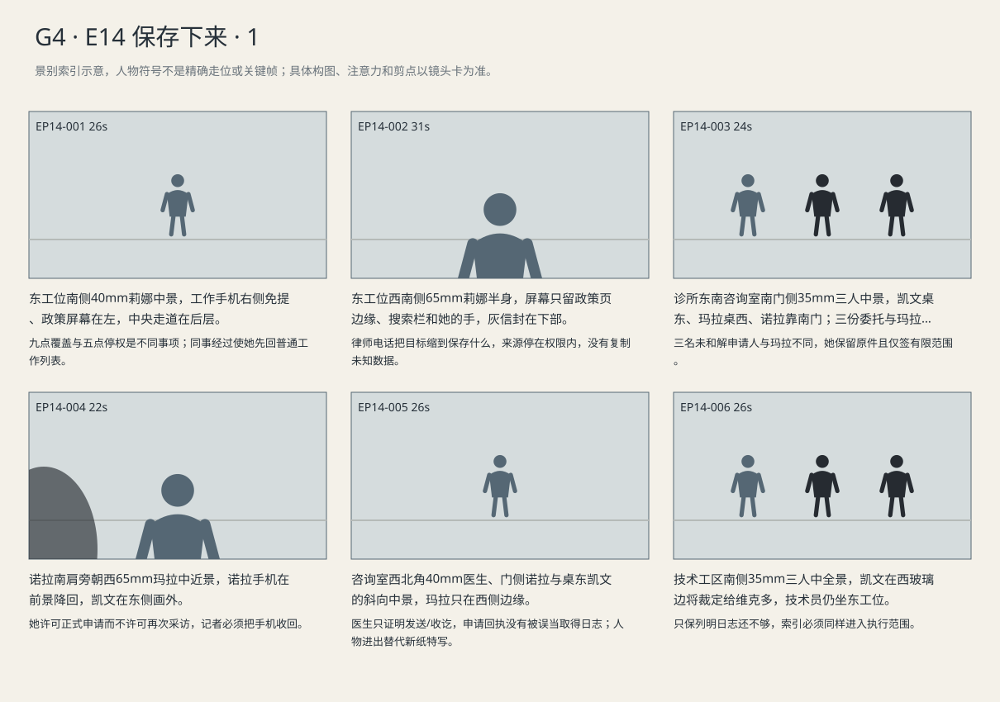
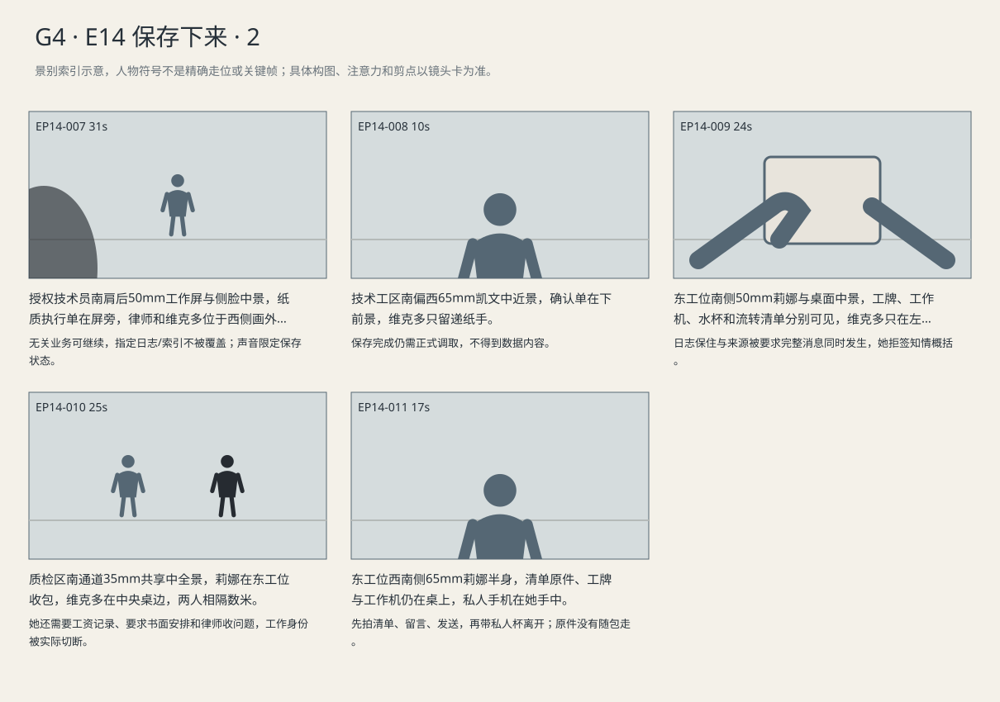

各人只交出有限授权，日志与索引获保全，其余迁移照常继续；没有人因此直接取得内容。
剧本Markdown · 全部独立复制稿 · 英语字幕 · 中文字幕
详细剧本
E14-SC01 · 日·数周后的迁移日前 · INSURER
数周后公司质检区，莉娜在东工位，灰信封贴着键盘。保留政策在屏幕左，下午五点停权通知在右，工作手机放桌右；北窗仍有日光。
莉娜在保留政策页上找到九点的常规覆盖任务，工作手机放桌右开免提。她先问IT日志，再问到病历；咨询员的答案让她把两个词分开记，随后挂断。
莉娜（英语，对着政策页逐项核清）：Nine tonight? Just the event logs? Not the charts?
中文对照：今晚九点？只是事件日志？病历不动？
IT咨询员（英语，当作普通保留政策解释，语速不演危险）：Charts stay. Those logs get overwritten unless we put a hold on them.
中文对照：病历留着。那类日志不办保全，就会覆盖。
权限暂停通知写着下午五点。莉娜从桌右拿工作手机拨凯文，把便签横在键盘前，看到同事经过便把页面收回普通工作列表。
莉娜（英语，把两个时限给清楚，等能做的任务）：My access ends at five. They overwrite the logs at nine. What do you need?
中文对照：我五点停权，日志九点覆盖。你要什么？
莉娜将暂停权限通知另存为自己工作记录，手停在搜索框。她原想再找一份病例，听到电话接通便关掉未输入的搜索栏。
莉娜（英语，不把保全当答案）：I can't promise which files those logs will explain.
中文对照：那些日志能解释哪些文件，我保证不了。
凯文（英语，把今晚的目标缩到保留）：I need to know what might disappear. We can ask for the contents later.
中文对照：先告诉我哪些可能消失。内容之后再申请。
莉娜（英语，接受不越权寻找证明）：All right. I'll send the policy.
中文对照：好。我发政策。
莉娜把电话放回右侧开免提，按凯文要求发送公司政策索引与日志类别。发送后她核对邮件已送出，才关闭草稿、挂断，把便签收入灰信封。
凯文（英语，接过后续责任，明确不让她越过访问权限）：Send the log category and the policy. Only what you're allowed to see. I'll handle the rest.
中文对照：发日志类别和保留政策，只发你有权限看的，剩下我办。
E14-SC02 · 日·迁移当天午间 · CLINIC
迁移当日午间诊所东南咨询室，凯文坐东，玛拉坐西，诺拉在南门侧。三位未和解患者的委托单在桌中，玛拉自己的和解书与蓝夹留在西侧；医生由南门进入。
诊所咨询桌上，凯文将三份未和解患者委托单装进申请夹，把玛拉的和解协议留外面。玛拉拿回自己的原件，问她是否还算申请人。
玛拉（英语，拿回和解原件，怕重新卷进去）：Am I back in the case?
中文对照：我又要打官司了？
凯文（英语，指有限授权范围，不把她变成申请人）：No. Three other patients are filing. You're just authorizing us to use the receipt.
中文对照：不是，另外三位患者申请。你只授权我们用这张回执。
玛拉把保留例外的那页从蓝夹里抽出，凯文核对后在有限授权上勾明回执范围。她签字，将原件重新塞回自己的夹内。
玛拉（英语，把个人条件带到公事）：No pictures of Ellie.
中文对照：不交艾莉的照片。
凯文（英语，明确重复她的条件，原件推回去）：No photos. Just the receipt. You keep the original.
中文对照：不交照片，只要回执。原件你拿着。
玛拉把蓝夹合上，诺拉刚把手机抬到桌沿，她便把签好的有限授权转向凯文。凯文逐项确认这次提交走正式程序，诺拉将手机放回口袋。
玛拉（英语，先向记者划界）：Is this going in another story?
中文对照：这也要写进新报道吗？
诺拉（英语，接受被拒绝，而不转问孩子）：I'm asking about the records, not for an interview.
中文对照：我来问记录，不是采访你。
凯文（英语，限定使用去向）：This goes with the formal request. Just the receipt you've authorized.
中文对照：这张随正式申请提交，只用你授权的回执。
玛拉（英语，保留自己的原件与其余资料）：Then use that. Nothing from her folder.
中文对照：那就用这张，别动她其他材料。
医生看一眼挂钟。诺拉想问内部复核，医生把笔放在自己能确认的发送与回执两行旁，边答边签名；答完带笔转身，朝南门画外返回病人那边。
诺拉（英语，想把发送成功往内部复核再推一步）：Did they have it when they reviewed her case?
中文对照：复核她的申请时，他们手里有吗？
医生（英语，只在自己能证实的两行签字）：I sent it. They sent this receipt back. That's all I can sign off on.
中文对照：我发了，他们回了这张回执。我能签字确认的就这些。
凯文打开刚收到的受理通知。诺拉举起手机等一句成功消息，凯文回答只是受理回执，不迎向她的镜头；随后收妥签名页与授权副本，合上黑包。
诺拉（英语，手机举起来，先把受理当成果）：Did we get them?
中文对照：拿到那些记录了？
凯文（英语，纠正对象，同时收文件）：No. That's the filing receipt.
中文对照：没有，这是申请受理回执。
E14-SC03 · 夜·迁移窗口前 · SERVER-OFFICE
当天 20:47 技术工区南门打开，凯文携正式送达副本进入。维克多在西玻璃墙边，技术员坐东侧授权工位，北设备柜风扇持续响，九点例行任务尚未执行。
夜间技术工区南门开，凯文带正式送达副本到维克多面前。授权技术员在东工位停下迁移准备，等两人核对范围；北墙钟在九点之前。
凯文（英语，把正式裁定附件展开到对方面前）：You've been served. The logs we need preserved are listed here.
中文对照：已经送达了。要保全的日志列在这里。
维克多（英语，先止住覆盖，再核裁定）：Pause the job. Let me check what it covers.
中文对照：先暂停。我看一下范围。
维克多在范围附件上指到指定日志，技术员在东侧工位等着范围确认，没有开口。凯文翻到同附件下一行索引要求，维克多看清后把两行一起划进执行单。
维克多（英语，指确定范围）：Only these logs.
中文对照：只保这几类日志。
凯文（英语，顺着对方手指往下一行补）：The index too. Right there.
中文对照：还有索引，就这行。
维克多（英语，看清后确认，不另争一句）：That too.
中文对照：那个也保留。
技术员将日志与索引两行加入排除清单，剩余迁移项目仍停着。维克多指向其余批次，凯文退开屏幕位置，只看执行范围。
维克多（英语，要恢复不受裁定影响的业务）：Can the rest of the job run?
中文对照：其他部分能照常跑吗？
技术员（英语，说实际操作顺序）：Yes. Once these exclusions are saved.
中文对照：可以，把排除项保存好就行。
凯文（英语，不要求当场展示内容）：Put both categories on the confirmation.
中文对照：确认单把两类都列上。
技术员在已授权工位录入保全编号，勾选执行范围，确认九点例行任务排除这组记录。打印机出执行确认时，他仍让屏幕停在状态页，没有替凯文打开内容。
技术员（英语，核状态后才宣布完成，手不打开内容）：The hold's in. The nine o'clock job will skip them. I'll print your confirmation.
中文对照：保全设好了，九点的任务会跳过这些。我给你打确认单。
凯文读确认单的记录范围和时间，与裁定附件逐一对照。维克多等他核完才恢复其余迁移任务；凯文将下一步正式调取联系人记下，不拿走数据。
凯文（英语，确认单已经核好，问下一步）：Who handles the records?
中文对照：记录找谁调？
维克多（英语，不把保全当作已向对方交出数据）：Our lawyers. This just confirms the hold.
中文对照：找我们律师。这张只确认保全。
E14-SC04 · 夜·同日稍后 · INSURER
同日晚间质检区，东工位已停权。莉娜把工牌与工作手机放桌中，水杯还压着用旧的杯垫。维克多从中央桌带来资料流转清单，南侧通路通向出口。
东侧工位权限暂停后，莉娜把工牌与工作手机放到桌中，取出自己用了很久的水杯装进包。维克多把一份资料流转清单放在她还没收走的杯垫上。
莉娜（英语，收自己的杯子前先确认）：They saved the logs?
中文对照：日志留住了？
维克多（英语，把流转清单放在她杯垫上）：They're on hold. Take a look at this.
中文对照：保全了。你看看这个。
莉娜在分发清单里看到路易吉名字，翻到后面确认不是只有互助组的地址。她把纸放回杯垫，不签对知情的概括，只同意由律师处理通信。
莉娜（英语，不签宽泛概括，只说当时目的）：He wanted examples for appeals. That's all I knew.
中文对照：他要申诉样本，我知道的就这些。
维克多（英语，给出下一步压力，不替她认定知情）：They'll want every message. Let your lawyer handle it.
中文对照：他们会要全部消息。交给你律师处理。
莉娜将流转清单留在杯垫上，手从工牌移向自己的包。维克多站在中央桌边等她收拾，她先确认哪些东西今天还带得走。
莉娜（英语，提出下班之后的实际困难）：I need my pay records. The portal uses this phone.
中文对照：工资记录我还得查，登录要用这部手机。
维克多（英语，只答能处理的事）：Payroll can send them to your personal address.
中文对照：工资那边能发到你的私人邮箱。
莉娜（英语，不再靠口头安排）：Put that in the email too. And send the questions to my lawyer.
中文对照：这个也写进邮件，问题发给我律师。
维克多（英语，结束行政交接，不承诺免于调查）：I will.
中文对照：好。
莉娜从包里取私人手机，将杯垫上清单逐页拍清，再拨律师语音信箱留下下列留言。留言结束后挂断，将刚拍的清单照片发送给律师；看到发送确认后沿南侧通路离开。清单原件、工作手机与工牌留在东桌，私人杯在肩包里轻碰。
莉娜（英语，对语音信箱说实际请求，结束后才发照片）：I've got the list. I'll send it. Please call before I talk to them.
中文对照：名单我拿到了，会发你。跟他们谈之前，先给我回个电话。
景别索引板
简化人物符号仅用于检索景别。完整镜头卡、信息变化及相邻剪点另页阅读。


逐镜复制稿
EP14-001 · 制作号E14-SH001 · 26s · 东工位南侧40mm莉娜中景，工作手机右侧免提、政策屏幕在左，中央走道在后层。
九点覆盖与五点停权是不同事项；同事经过使她先回普通工作列表。
成片采用 [0,26) 秒；2个生成候选，技术边界不是剪点。候选未生成。
成片镜 E14-SH001 共26秒；下面2个独立生成候选共同服务本镜。技术接续不等于成片剪点，不能将本文件整段提交为一次任务。先制作并核验连续表演、机位和声线，再决定延长或覆盖方案；当前无实际媒体。
【E14-SH001-G01 · 本镜采用 0—15 秒】
16:9横屏，当代美国真人现实悬疑。环境低至中等饱和，人物肤色保持真实差异与自然纹理；深黑保留衣料和道具分离，白纸与白领高光柔和有层次。冷暖来自本镜已有物理光源，不统一青橙、不磨皮、不以整体欠曝制造悬疑。遵循本镜机位、表演与焦点，不擅自追加缓推、急变焦或摇晃。
场次风格：本场时段：日·数周后的迁移日前。本场光源启用及强度以明确时段和正文为准，同场反打继承光源方向；不因景别变化任意换色温。 本地光色与材质：玻璃、浅灰表面、整洁木色与中性肤色构成明净办公室；不以邪恶绿光标记立场。玻璃边缘和桌面分区体现发言权，摄影只按本镜既定触发响应说话人。
总生成长度17秒，为中间15秒采用区间保留开头和结尾各1秒自然余量，不增添剧情。
人物：
以下为连续镜的身份库；人物是否已入画、离场及持物只依本段起态与动作，不能把整镜所有角色同时塞入本段。
莉娜，41岁白人女性，棕黑发低髻、薄金属框眼镜、橄榄绿开衫、白棉衬衫、炭灰裤，灰色文件信封。声音较轻、谨慎，有被追问后的停顿。
公司IT咨询员，35岁男性，清楚普通男中音，仅工作手机电话声，不在莉娜身旁出现。
环境与光源：公司会议室/工区共享楼层；入口南、玻璃走廊东、会议桌中央、北侧显示屏、西窗。质检工位靠东侧，账号权限有限。屏幕内容后期替换。
景别/机位：东工位南侧40mm莉娜中景
构图：沿用该成片镜既定机位和场景方向；当前站位、朝向与持物：莉娜在东工位已拨通IT咨询，工作手机桌右开免提，屏上保留政策与九点常规任务类别。
起始画面：莉娜在东工位已拨通IT咨询，工作手机桌右开免提，屏上保留政策与九点常规任务类别。
事件与表演：莉娜在保留政策页上找到九点的常规覆盖任务，工作手机放桌右开免提。她先问IT日志，再问到病历；咨询员的答案让她把两个词分开记，随后挂断。
注意力变化：莉娜在东工位已拨通IT咨询，工作手机桌右开免提，屏上保留政策与九点常规任务类别。 → IT通话结束，工作手机桌右，保留类别与九点时间记在便签。
摄影机：固定26秒，第一通咨询挂断、第二通拨律师是两次清楚的操作。
焦点：仅响应本段当前动作与受话关系；不预先转向尚未发生的后段事件。
结束状态：IT通话结束，工作手机桌右，保留类别与九点时间记在便签。
声音：<公司中央空调低响；当前空间连续环境底声；拟音只随本段真实动作与物件接触发生，已完成事件不重演；可辨英语仅为下列本段对白。>
(无背景音乐，场内连续底声承担空间与节奏。)
准确对白按顺序：
莉娜向IT咨询员（电话），对着政策页逐项核清，只使用英语说一次：{Nine tonight? Just the event logs? Not the charts?}
IT咨询员向莉娜（电话），当作普通保留政策解释，语速不演危险，只使用英语说一次：{Charts stay. Those logs get overwritten unless we put a hold on them.}
只说列出的英语原句；导演说明不发声，不说中文译文，不额外加旁白或对白。手机/公文/字幕均由后期叠加，生成画面不排字。单镜连续，不加入内部切镜；前后保持身份、服装、门窗、物件与接触状态一致。
【E14-SH001-G02 · 本镜采用 15—26 秒】
16:9横屏，当代美国真人现实悬疑。环境低至中等饱和，人物肤色保持真实差异与自然纹理；深黑保留衣料和道具分离，白纸与白领高光柔和有层次。冷暖来自本镜已有物理光源，不统一青橙、不磨皮、不以整体欠曝制造悬疑。遵循本镜机位、表演与焦点，不擅自追加缓推、急变焦或摇晃。
场次风格：本场时段：日·数周后的迁移日前。本场光源启用及强度以明确时段和正文为准，同场反打继承光源方向；不因景别变化任意换色温。 本地光色与材质：玻璃、浅灰表面、整洁木色与中性肤色构成明净办公室；不以邪恶绿光标记立场。玻璃边缘和桌面分区体现发言权，摄影只按本镜既定触发响应说话人。
总生成长度13秒，为中间11秒采用区间保留开头和结尾各1秒自然余量，不增添剧情。
人物：
以下为连续镜的身份库；人物是否已入画、离场及持物只依本段起态与动作，不能把整镜所有角色同时塞入本段。
莉娜，41岁白人女性，棕黑发低髻、薄金属框眼镜、橄榄绿开衫、白棉衬衫、炭灰裤，灰色文件信封。声音较轻、谨慎，有被追问后的停顿。
公司IT咨询员，35岁男性，清楚普通男中音，仅工作手机电话声，不在莉娜身旁出现。
环境与光源：公司会议室/工区共享楼层；入口南、玻璃走廊东、会议桌中央、北侧显示屏、西窗。质检工位靠东侧，账号权限有限。屏幕内容后期替换。
景别/机位：东工位南侧40mm莉娜中景
构图：沿用该成片镜既定机位和场景方向；当前站位、朝向与持物：IT通话结束，工作手机桌右，保留类别与九点时间记在便签。
起始画面：IT通话结束，工作手机桌右，保留类别与九点时间记在便签。
事件与表演：权限暂停通知写着下午五点。莉娜从桌右拿工作手机拨凯文，把便签横在键盘前，看到同事经过便把页面收回普通工作列表。
注意力变化：IT通话结束，工作手机桌右，保留类别与九点时间记在便签。 → 电话接通右耳，政策类别已记下，未复制患者档案。
摄影机：固定26秒，第一通咨询挂断、第二通拨律师是两次清楚的操作。
焦点：仅响应本段当前动作与受话关系；不预先转向尚未发生的后段事件。
结束状态：电话接通右耳，政策类别已记下，未复制患者档案。
声音：<公司中央空调低响；当前空间连续环境底声；拟音只随本段真实动作与物件接触发生，已完成事件不重演；可辨英语仅为下列本段对白。>
(无背景音乐，场内连续底声承担空间与节奏。)
准确对白按顺序：
莉娜向凯文（电话），把两个时限给清楚，等能做的任务，只使用英语说一次：{My access ends at five. They overwrite the logs at nine. What do you need?}
只说列出的英语原句；导演说明不发声，不说中文译文，不额外加旁白或对白。手机/公文/字幕均由后期叠加，生成画面不排字。单镜连续，不加入内部切镜；前后保持身份、服装、门窗、物件与接触状态一致。静帧起态备稿
16:9横屏，当代美国真人现实悬疑。环境低至中等饱和，人物肤色保持真实差异与自然纹理；深黑保留衣料和道具分离，白纸与白领高光柔和有层次。冷暖来自本镜已有物理光源，不统一青橙、不磨皮、不以整体欠曝制造悬疑。遵循本镜机位、表演与焦点，不擅自追加缓推、急变焦或摇晃。
场次风格：本场时段：日·数周后的迁移日前。本场光源启用及强度以明确时段和正文为准，同场反打继承光源方向；不因景别变化任意换色温。 本地光色与材质：玻璃、浅灰表面、整洁木色与中性肤色构成明净办公室；不以邪恶绿光标记立场。玻璃边缘和桌面分区体现发言权，摄影只按本镜既定触发响应说话人。
莉娜，41岁白人女性，棕黑发低髻、薄金属框眼镜、橄榄绿开衫、白棉衬衫、炭灰裤，灰色文件信封。声音较轻、谨慎，有被追问后的停顿。
公司会议室/工区共享楼层；入口南、玻璃走廊东、会议桌中央、北侧显示屏、西窗。质检工位靠东侧，账号权限有限。屏幕内容后期替换。
东工位南侧40mm莉娜中景，工作手机右侧免提、政策屏幕在左，中央走道在后层。；起态构图：莉娜在东工位已拨通IT咨询，工作手机桌右开免提，屏上保留政策与九点常规任务类别。。空间方位按上列环境，人物只处于起态；本镜后续调度不出现在静帧。此图不描画尚未发生的动作，不生成字幕和公文长字。
| 英语原句 | 中文对照 | 预定窗口 |
|---|
| 莉娜：Nine tonight? Just the event logs? Not the charts? | 今晚九点？只是事件日志？病历不动？ | 1–5.3s |
| IT咨询员：Charts stay. Those logs get overwritten unless we put a hold on them. | 病历留着。那类日志不办保全，就会覆盖。 | 5.6–11.3s |
| 莉娜：My access ends at five. They overwrite the logs at nine. What do you need? | 我五点停权，日志九点覆盖。你要什么？ | 16–24.2s |
观众信息：在来源即将失去权限前争取保存，而不假装已经取得答案。 → 电话接通右耳，政策类别已记下，未复制患者档案。
切点：她想继续检索却停住，切更近的来源决定，不切不存在的律师现场。
接口：接E14-SH003；她想继续检索却停住，切更近的来源决定，不切不存在的律师现场。
EP14-002 · 制作号E14-SH003 · 31s · 东工位西南侧65mm莉娜半身，屏幕只留政策页边缘、搜索栏和她的手，灰信封在下部。
律师电话把目标缩到保存什么，来源停在权限内，没有复制未知数据。
成片采用 [26,57) 秒；2个生成候选，技术边界不是剪点。候选未生成。
成片镜 E14-SH003 共31秒；下面2个独立生成候选共同服务本镜。技术接续不等于成片剪点，不能将本文件整段提交为一次任务。先制作并核验连续表演、机位和声线，再决定延长或覆盖方案；当前无实际媒体。
【E14-SH003-G01 · 本镜采用 0—18 秒】
16:9横屏，当代美国真人现实悬疑。环境低至中等饱和，人物肤色保持真实差异与自然纹理；深黑保留衣料和道具分离，白纸与白领高光柔和有层次。冷暖来自本镜已有物理光源，不统一青橙、不磨皮、不以整体欠曝制造悬疑。遵循本镜机位、表演与焦点，不擅自追加缓推、急变焦或摇晃。
场次风格：本场时段：日·数周后的迁移日前。本场光源启用及强度以明确时段和正文为准，同场反打继承光源方向；不因景别变化任意换色温。 本地光色与材质：玻璃、浅灰表面、整洁木色与中性肤色构成明净办公室；不以邪恶绿光标记立场。玻璃边缘和桌面分区体现发言权，摄影只按本镜既定触发响应说话人。
总生成长度20秒，为中间18秒采用区间保留开头和结尾各1秒自然余量，不增添剧情。
人物：
以下为连续镜的身份库；人物是否已入画、离场及持物只依本段起态与动作，不能把整镜所有角色同时塞入本段。
莉娜，41岁白人女性，棕黑发低髻、薄金属框眼镜、橄榄绿开衫、白棉衬衫、炭灰裤，灰色文件信封。声音较轻、谨慎，有被追问后的停顿。
患者代理律师凯文，40岁黑人男性，短发、棕灰西装、白衬衫、无领带，黑文件包。与海伦为不同委托关系；玛拉已和解，保全申请由其他尚未和解患者发起，玛拉按保留条款提供材料。
声源与背景限定：凯文仅在莉娜工作手机免提中说准确原句，不在公司工位现场。
环境与光源：公司会议室/工区共享楼层；入口南、玻璃走廊东、会议桌中央、北侧显示屏、西窗。质检工位靠东侧，账号权限有限。屏幕内容后期替换。
景别/机位：东工位西南侧65mm莉娜半身
构图：沿用该成片镜既定机位和场景方向；当前站位、朝向与持物：电话接通右耳，政策类别已记下，未复制患者档案。
起始画面：电话接通右耳，政策类别已记下，未复制患者档案。
事件与表演：莉娜将暂停权限通知另存为自己工作记录，手停在搜索框。她原想再找一份病例，听到电话接通便关掉未输入的搜索栏。
注意力变化：电话接通右耳，政策类别已记下，未复制患者档案。 → 她只打开已有权限的保留政策索引，不再检索其他患者。
摄影机：固定31秒，关闭空搜索栏后只发送已有权限的索引。
焦点：仅响应本段当前动作与受话关系；不预先转向尚未发生的后段事件。
结束状态：她只打开已有权限的保留政策索引，不再检索其他患者。
声音：<公司中央空调低响；当前空间连续环境底声；拟音只随本段真实动作与物件接触发生，已完成事件不重演；可辨英语仅为下列本段对白。>
(无背景音乐，场内连续底声承担空间与节奏。)
准确对白按顺序：
莉娜向凯文（电话），不把保全当答案，只使用英语说一次：{I can't promise which files those logs will explain.}
凯文向莉娜（电话），把今晚的目标缩到保留，只使用英语说一次：{I need to know what might disappear. We can ask for the contents later.}
莉娜向凯文（电话），接受不越权寻找证明，只使用英语说一次：{All right. I'll send the policy.}
只说列出的英语原句；导演说明不发声，不说中文译文，不额外加旁白或对白。手机/公文/字幕均由后期叠加，生成画面不排字。单镜连续，不加入内部切镜；前后保持身份、服装、门窗、物件与接触状态一致。
【E14-SH003-G02 · 本镜采用 18—31 秒】
16:9横屏，当代美国真人现实悬疑。环境低至中等饱和，人物肤色保持真实差异与自然纹理；深黑保留衣料和道具分离，白纸与白领高光柔和有层次。冷暖来自本镜已有物理光源，不统一青橙、不磨皮、不以整体欠曝制造悬疑。遵循本镜机位、表演与焦点，不擅自追加缓推、急变焦或摇晃。
场次风格：本场时段：日·数周后的迁移日前。本场光源启用及强度以明确时段和正文为准，同场反打继承光源方向；不因景别变化任意换色温。 本地光色与材质：玻璃、浅灰表面、整洁木色与中性肤色构成明净办公室；不以邪恶绿光标记立场。玻璃边缘和桌面分区体现发言权，摄影只按本镜既定触发响应说话人。
总生成长度15秒，为中间13秒采用区间保留开头和结尾各1秒自然余量，不增添剧情。
人物：
以下为连续镜的身份库；人物是否已入画、离场及持物只依本段起态与动作，不能把整镜所有角色同时塞入本段。
莉娜，41岁白人女性，棕黑发低髻、薄金属框眼镜、橄榄绿开衫、白棉衬衫、炭灰裤，灰色文件信封。声音较轻、谨慎，有被追问后的停顿。
患者代理律师凯文，40岁黑人男性，短发、棕灰西装、白衬衫、无领带，黑文件包。与海伦为不同委托关系；玛拉已和解，保全申请由其他尚未和解患者发起，玛拉按保留条款提供材料。
声源与背景限定：凯文仅在莉娜工作手机免提中说准确原句，不在公司工位现场。
环境与光源：公司会议室/工区共享楼层；入口南、玻璃走廊东、会议桌中央、北侧显示屏、西窗。质检工位靠东侧，账号权限有限。屏幕内容后期替换。
景别/机位：东工位西南侧65mm莉娜半身
构图：沿用该成片镜既定机位和场景方向；当前站位、朝向与持物：她只打开已有权限的保留政策索引，不再检索其他患者。
起始画面：她只打开已有权限的保留政策索引，不再检索其他患者。
事件与表演：莉娜把电话放回右侧开免提，按凯文要求发送公司政策索引与日志类别。发送后她核对邮件已送出，才关闭草稿、挂断，把便签收入灰信封。
注意力变化：她只打开已有权限的保留政策索引，不再检索其他患者。 → 公开政策线索已发送，未越权取走数据，电话已断。
摄影机：固定31秒，关闭空搜索栏后只发送已有权限的索引。
焦点：仅响应本段当前动作与受话关系；不预先转向尚未发生的后段事件。
结束状态：公开政策线索已发送，未越权取走数据，电话已断。
声音：<公司中央空调低响；当前空间连续环境底声；拟音只随本段真实动作与物件接触发生，已完成事件不重演；可辨英语仅为下列本段对白。>
(无背景音乐，场内连续底声承担空间与节奏。)
准确对白按顺序：
凯文向莉娜（电话），接过后续责任，明确不让她越过访问权限，只使用英语说一次：{Send the log category and the policy. Only what you're allowed to see. I'll handle the rest.}
只说列出的英语原句；导演说明不发声，不说中文译文，不额外加旁白或对白。手机/公文/字幕均由后期叠加，生成画面不排字。单镜连续，不加入内部切镜；前后保持身份、服装、门窗、物件与接触状态一致。静帧起态备稿
16:9横屏，当代美国真人现实悬疑。环境低至中等饱和，人物肤色保持真实差异与自然纹理；深黑保留衣料和道具分离，白纸与白领高光柔和有层次。冷暖来自本镜已有物理光源，不统一青橙、不磨皮、不以整体欠曝制造悬疑。遵循本镜机位、表演与焦点，不擅自追加缓推、急变焦或摇晃。
场次风格：本场时段：日·数周后的迁移日前。本场光源启用及强度以明确时段和正文为准，同场反打继承光源方向；不因景别变化任意换色温。 本地光色与材质：玻璃、浅灰表面、整洁木色与中性肤色构成明净办公室；不以邪恶绿光标记立场。玻璃边缘和桌面分区体现发言权，摄影只按本镜既定触发响应说话人。
莉娜，41岁白人女性，棕黑发低髻、薄金属框眼镜、橄榄绿开衫、白棉衬衫、炭灰裤，灰色文件信封。声音较轻、谨慎，有被追问后的停顿。
患者代理律师凯文，40岁黑人男性，短发、棕灰西装、白衬衫、无领带，黑文件包。与海伦为不同委托关系；玛拉已和解，保全申请由其他尚未和解患者发起，玛拉按保留条款提供材料。
公司会议室/工区共享楼层；入口南、玻璃走廊东、会议桌中央、北侧显示屏、西窗。质检工位靠东侧，账号权限有限。屏幕内容后期替换。
东工位西南侧65mm莉娜半身，屏幕只留政策页边缘、搜索栏和她的手，灰信封在下部。；起态构图：电话接通右耳，政策类别已记下，未复制患者档案。。空间方位按上列环境，人物只处于起态；本镜后续调度不出现在静帧。此图不描画尚未发生的动作，不生成字幕和公文长字。
| 英语原句 | 中文对照 | 预定窗口 |
|---|
| 莉娜：I can't promise which files those logs will explain. | 那些日志能解释哪些文件，我保证不了。 | 1–4.53s |
| 凯文：I need to know what might disappear. We can ask for the contents later. | 先告诉我哪些可能消失。内容之后再申请。 | 4.83–10.32s |
| 莉娜：All right. I'll send the policy. | 好。我发政策。 | 10.62–12.97s |
| 凯文：Send the log category and the policy. Only what you're allowed to see. I'll handle the rest. | 发日志类别和保留政策，只发你有权限看的，剩下我办。 | 19–26.2s |
观众信息：电话接通右耳，政策类别已记下，未复制患者档案。 → 公开政策线索已发送，未越权取走数据，电话已断。
切点：发送确认后电话放下，切申请人授权的另一端。
接口：本场结果成立后切入 E14-SC02（CLINIC，日·迁移当天午间）；以新场开头建立空间和人物持物，环境声按新场接入。
EP14-003 · 制作号E14-SH004 · 24s · 诊所东南咨询室南门侧35mm三人中景，凯文桌东、玛拉桌西、诺拉靠南门；三份委托与玛拉蓝夹分开。
三名未和解申请人与玛拉不同，她保留原件且仅签有限范围。
成片采用 [57,81) 秒；2个生成候选，技术边界不是剪点。候选未生成。
成片镜 E14-SH004 共24秒；下面2个独立生成候选共同服务本镜。技术接续不等于成片剪点，不能将本文件整段提交为一次任务。先制作并核验连续表演、机位和声线，再决定延长或覆盖方案；当前无实际媒体。
【E14-SH004-G01 · 本镜采用 0—12 秒】
16:9横屏，当代美国真人现实悬疑。环境低至中等饱和，人物肤色保持真实差异与自然纹理；深黑保留衣料和道具分离，白纸与白领高光柔和有层次。冷暖来自本镜已有物理光源，不统一青橙、不磨皮、不以整体欠曝制造悬疑。遵循本镜机位、表演与焦点，不擅自追加缓推、急变焦或摇晃。
场次风格：本场时段：日·迁移当天午间。本场光源启用及强度以明确时段和正文为准，同场反打继承光源方向；不因景别变化任意换色温。 本地光色与材质：西窗与中性顶灯分区，灰绿只留在环境与材质；各人肤色保持区别，纸张不染成蓝绿。柜台和候诊区保持纵深，工作人员依自身任务活动。
总生成长度14秒，为中间12秒采用区间保留开头和结尾各1秒自然余量，不增添剧情。
人物：
以下为连续镜的身份库；人物是否已入画、离场及持物只依本段起态与动作，不能把整镜所有角色同时塞入本段。
患者代理律师凯文，40岁黑人男性，短发、棕灰西装、白衬衫、无领带，黑文件包。与海伦为不同委托关系；玛拉已和解，保全申请由其他尚未和解患者发起，玛拉按保留条款提供材料。
玛拉，38岁白人女性，栗棕发低马尾、眼下疲态、圆方脸，黑色polo工服、灰围裙、深灰裤、防滑鞋；灰风衣为下班外套。手机和蓝色资料夹为独立道具，位置与持物依当前镜头起态和连续动作。声音中音，快而实在，对孩子放缓。
诺拉，32岁华裔美国女性，黑色齐肩直发、灰蓝大衣、米白衬衫、深色牛仔裤、黑鞋，红皮笔记本和黑手机。声音明亮清楚，采访时给对方说完。
环境与光源：宾州治疗中心；入口南、走廊向北、东侧接待台、西侧长椅与玻璃窗、北端治疗门，东南侧有绕到治疗区的受控侧廊。西窗冷光、顶灯中性。不能剪到纽约同街。
景别/机位：诊所东南咨询室南门侧35mm三人中景
构图：沿用该成片镜既定机位和场景方向；当前站位、朝向与持物：玛拉左臂蓝色文件夹，右手机，医生持回执。
起始画面：玛拉左臂蓝色文件夹，右手机，医生持回执。
事件与表演：诊所咨询桌上，凯文将三份未和解患者委托单装进申请夹，把玛拉的和解协议留外面。玛拉拿回自己的原件，问她是否还算申请人。
注意力变化：玛拉左臂蓝色文件夹，右手机，医生持回执。 → 三名独立委托人与玛拉补充材料分开。
摄影机：固定24秒，让回执授权在两位当事人手里完成。
焦点：仅响应本段当前动作与受话关系；不预先转向尚未发生的后段事件。
结束状态：三名独立委托人与玛拉补充材料分开。
声音：<诊所通风与远处不可辨的候诊人声；当前空间连续环境底声；拟音只随本段真实动作与物件接触发生，已完成事件不重演；可辨英语仅为下列本段对白。>
(无背景音乐，场内连续底声承担空间与节奏。)
准确对白按顺序：
玛拉向凯文，拿回和解原件，怕重新卷进去，只使用英语说一次：{Am I back in the case?}
凯文向玛拉，指有限授权范围，不把她变成申请人，只使用英语说一次：{No. Three other patients are filing. You're just authorizing us to use the receipt.}
只说列出的英语原句；导演说明不发声，不说中文译文，不额外加旁白或对白。手机/公文/字幕均由后期叠加，生成画面不排字。单镜连续，不加入内部切镜；前后保持身份、服装、门窗、物件与接触状态一致。
【E14-SH004-G02 · 本镜采用 12—24 秒】
16:9横屏，当代美国真人现实悬疑。环境低至中等饱和，人物肤色保持真实差异与自然纹理；深黑保留衣料和道具分离，白纸与白领高光柔和有层次。冷暖来自本镜已有物理光源，不统一青橙、不磨皮、不以整体欠曝制造悬疑。遵循本镜机位、表演与焦点，不擅自追加缓推、急变焦或摇晃。
场次风格：本场时段：日·迁移当天午间。本场光源启用及强度以明确时段和正文为准，同场反打继承光源方向；不因景别变化任意换色温。 本地光色与材质：西窗与中性顶灯分区，灰绿只留在环境与材质；各人肤色保持区别，纸张不染成蓝绿。柜台和候诊区保持纵深，工作人员依自身任务活动。
总生成长度14秒，为中间12秒采用区间保留开头和结尾各1秒自然余量，不增添剧情。
人物：
以下为连续镜的身份库；人物是否已入画、离场及持物只依本段起态与动作，不能把整镜所有角色同时塞入本段。
患者代理律师凯文，40岁黑人男性，短发、棕灰西装、白衬衫、无领带，黑文件包。与海伦为不同委托关系；玛拉已和解，保全申请由其他尚未和解患者发起，玛拉按保留条款提供材料。
玛拉，38岁白人女性，栗棕发低马尾、眼下疲态、圆方脸，黑色polo工服、灰围裙、深灰裤、防滑鞋；灰风衣为下班外套。手机和蓝色资料夹为独立道具，位置与持物依当前镜头起态和连续动作。声音中音，快而实在，对孩子放缓。
诺拉，32岁华裔美国女性，黑色齐肩直发、灰蓝大衣、米白衬衫、深色牛仔裤、黑鞋，红皮笔记本和黑手机。声音明亮清楚，采访时给对方说完。
环境与光源：宾州治疗中心；入口南、走廊向北、东侧接待台、西侧长椅与玻璃窗、北端治疗门，东南侧有绕到治疗区的受控侧廊。西窗冷光、顶灯中性。不能剪到纽约同街。
景别/机位：诊所东南咨询室南门侧35mm三人中景
构图：沿用该成片镜既定机位和场景方向；当前站位、朝向与持物：三名独立委托人与玛拉补充材料分开。
起始画面：三名独立委托人与玛拉补充材料分开。
事件与表演：玛拉把保留例外的那页从蓝夹里抽出，凯文核对后在有限授权上勾明回执范围。她签字，将原件重新塞回自己的夹内。
注意力变化：三名独立委托人与玛拉补充材料分开。 → 有限授权归凯文，原回执与和解副本仍归玛拉。
摄影机：固定24秒，让回执授权在两位当事人手里完成。
焦点：仅响应本段当前动作与受话关系；不预先转向尚未发生的后段事件。
结束状态：有限授权归凯文，原回执与和解副本仍归玛拉。
声音：<诊所通风与远处不可辨的候诊人声；当前空间连续环境底声；拟音只随本段真实动作与物件接触发生，已完成事件不重演；可辨英语仅为下列本段对白。>
(无背景音乐，场内连续底声承担空间与节奏。)
准确对白按顺序：
玛拉向凯文，把个人条件带到公事，只使用英语说一次：{No pictures of Ellie.}
凯文向玛拉，明确重复她的条件，原件推回去，只使用英语说一次：{No photos. Just the receipt. You keep the original.}
只说列出的英语原句；导演说明不发声，不说中文译文，不额外加旁白或对白。手机/公文/字幕均由后期叠加，生成画面不排字。单镜连续，不加入内部切镜；前后保持身份、服装、门窗、物件与接触状态一致。静帧起态备稿
16:9横屏，当代美国真人现实悬疑。环境低至中等饱和，人物肤色保持真实差异与自然纹理；深黑保留衣料和道具分离，白纸与白领高光柔和有层次。冷暖来自本镜已有物理光源，不统一青橙、不磨皮、不以整体欠曝制造悬疑。遵循本镜机位、表演与焦点，不擅自追加缓推、急变焦或摇晃。
场次风格：本场时段：日·迁移当天午间。本场光源启用及强度以明确时段和正文为准，同场反打继承光源方向；不因景别变化任意换色温。 本地光色与材质：西窗与中性顶灯分区，灰绿只留在环境与材质；各人肤色保持区别，纸张不染成蓝绿。柜台和候诊区保持纵深，工作人员依自身任务活动。
患者代理律师凯文，40岁黑人男性，短发、棕灰西装、白衬衫、无领带，黑文件包。与海伦为不同委托关系；玛拉已和解，保全申请由其他尚未和解患者发起，玛拉按保留条款提供材料。
玛拉，38岁白人女性，栗棕发低马尾、眼下疲态、圆方脸，黑色polo工服、灰围裙、深灰裤、防滑鞋；灰风衣为下班外套。手机和蓝色资料夹为独立道具，位置与持物依当前镜头起态和连续动作。声音中音，快而实在，对孩子放缓。
诺拉，32岁华裔美国女性，黑色齐肩直发、灰蓝大衣、米白衬衫、深色牛仔裤、黑鞋，红皮笔记本和黑手机。声音明亮清楚，采访时给对方说完。
宾州治疗中心；入口南、走廊向北、东侧接待台、西侧长椅与玻璃窗、北端治疗门，东南侧有绕到治疗区的受控侧廊。西窗冷光、顶灯中性。不能剪到纽约同街。
诊所东南咨询室南门侧35mm三人中景，凯文桌东、玛拉桌西、诺拉靠南门；三份委托与玛拉蓝夹分开。；起态构图：玛拉左臂蓝色文件夹，右手机，医生持回执。。空间方位按上列环境，人物只处于起态；本镜后续调度不出现在静帧。此图不描画尚未发生的动作，不生成字幕和公文长字。
| 英语原句 | 中文对照 | 预定窗口 |
|---|
| 玛拉：Am I back in the case? | 我又要打官司了？ | 1–3.8s |
| 凯文：No. Three other patients are filing. You're just authorizing us to use the receipt. | 不是，另外三位患者申请。你只授权我们用这张回执。 | 4.1–10.8s |
| 玛拉：No pictures of Ellie. | 不交艾莉的照片。 | 13–15.3s |
| 凯文：No photos. Just the receipt. You keep the original. | 不交照片，只要回执。原件你拿着。 | 15.6–19.4s |
观众信息：把集体保全建立在各人的有限授权上。 → 有限授权归凯文，原回执与和解副本仍归玛拉。
切点：诺拉抬手机，玛拉先问会不会写进报道，切她要求边界的视角。
接口：接E14-SH101；诺拉抬手机，玛拉先问会不会写进报道，切她要求边界的视角。
EP14-004 · 制作号E14-SH101 · 22s · 诺拉南肩旁朝西65mm玛拉中近景，诺拉手机在前景降回，凯文在东侧画外。
她许可正式申请而不许可再次采访，记者必须把手机收回。
成片采用 [81,103) 秒；1个生成候选，技术边界不是剪点。候选未生成。
16:9横屏，当代美国真人现实悬疑。环境低至中等饱和，人物肤色保持真实差异与自然纹理；深黑保留衣料和道具分离，白纸与白领高光柔和有层次。冷暖来自本镜已有物理光源，不统一青橙、不磨皮、不以整体欠曝制造悬疑。遵循本镜机位、表演与焦点，不擅自追加缓推、急变焦或摇晃。
场次风格：本场时段：日·迁移当天午间。本场光源启用及强度以明确时段和正文为准，同场反打继承光源方向；不因景别变化任意换色温。 本地光色与材质：西窗与中性顶灯分区，灰绿只留在环境与材质；各人肤色保持区别，纸张不染成蓝绿。柜台和候诊区保持纵深，工作人员依自身任务活动。
总生成长度24秒，为中间22秒采用区间保留开头和结尾各1秒自然余量，不增添剧情。
人物：
玛拉，38岁白人女性，栗棕发低马尾、眼下疲态、圆方脸，黑色polo工服、灰围裙、深灰裤、防滑鞋；灰风衣为下班外套。手机和蓝色资料夹为独立道具，位置与持物依当前镜头起态和连续动作。声音中音，快而实在，对孩子放缓。
诺拉，32岁华裔美国女性，黑色齐肩直发、灰蓝大衣、米白衬衫、深色牛仔裤、黑鞋，红皮笔记本和黑手机。声音明亮清楚，采访时给对方说完。
患者代理律师凯文，40岁黑人男性，短发、棕灰西装、白衬衫、无领带，黑文件包。与海伦为不同委托关系；玛拉已和解，保全申请由其他尚未和解患者发起，玛拉按保留条款提供材料。
环境与光源：宾州治疗中心；入口南、走廊向北、东侧接待台、西侧长椅与玻璃窗、北端治疗门，东南侧有绕到治疗区的受控侧廊。西窗冷光、顶灯中性。不能剪到纽约同街。
景别/机位：诺拉南肩旁朝西65mm玛拉中近景，诺拉手机在前景降回，凯文在东侧画外。
构图：迁移当日午间诊所东南咨询室，凯文坐东，玛拉坐西，诺拉在南门侧。三位未和解患者的委托单在桌中，玛拉自己的和解书与蓝夹留在西侧；医生由南门进入。 本镜画内角色：MARA-WORK。其余所列说话者留在已建立的画外席位或电话对端。
起始画面：有限授权归凯文，原回执与和解副本仍归玛拉。
事件与表演：玛拉把蓝夹合上，诺拉刚把手机抬到桌沿，她便把签好的有限授权转向凯文。凯文逐项确认这次提交走正式程序，诺拉将手机放回口袋。
注意力变化：有限授权归凯文，原回执与和解副本仍归玛拉。 → 凯文把授权副本放进申请夹，蓝夹始终留在玛拉手里。
摄影机：固定22秒，蓝夹合上留在玛拉手里。
焦点：她许可正式申请而不许可再次采访，记者必须把手机收回。
结束状态：凯文把授权副本放进申请夹，蓝夹始终留在玛拉手里。
声音：<通风、远处治疗车与受控门声；候诊者和工作人员无新增可辨台词。>
(无背景音乐，场内连续底声承担空间与节奏。)
准确对白按顺序：
玛拉向诺拉与凯文，先向记者划界，只使用英语说一次：{Is this going in another story?}
诺拉向莉娜，接受被拒绝，而不转问孩子，只使用英语说一次：{I'm asking about the records, not for an interview.}
凯文向玛拉，限定使用去向，只使用英语说一次：{This goes with the formal request. Just the receipt you've authorized.}
玛拉向诺拉与凯文，保留自己的原件与其余资料，只使用英语说一次：{Then use that. Nothing from her folder.}
只说列出的英语原句；导演说明不发声，不说中文译文，不额外加旁白或对白。手机/公文/字幕均由后期叠加，生成画面不排字。单镜连续，不加入内部切镜；前后保持身份、服装、门窗、物件与接触状态一致。静帧起态备稿
16:9横屏，当代美国真人现实悬疑。环境低至中等饱和，人物肤色保持真实差异与自然纹理；深黑保留衣料和道具分离，白纸与白领高光柔和有层次。冷暖来自本镜已有物理光源，不统一青橙、不磨皮、不以整体欠曝制造悬疑。遵循本镜机位、表演与焦点，不擅自追加缓推、急变焦或摇晃。
场次风格：本场时段：日·迁移当天午间。本场光源启用及强度以明确时段和正文为准，同场反打继承光源方向；不因景别变化任意换色温。 本地光色与材质：西窗与中性顶灯分区，灰绿只留在环境与材质；各人肤色保持区别，纸张不染成蓝绿。柜台和候诊区保持纵深，工作人员依自身任务活动。
玛拉，38岁白人女性，栗棕发低马尾、眼下疲态、圆方脸，黑色polo工服、灰围裙、深灰裤、防滑鞋；灰风衣为下班外套。手机和蓝色资料夹为独立道具，位置与持物依当前镜头起态和连续动作。声音中音，快而实在，对孩子放缓。
诺拉，32岁华裔美国女性，黑色齐肩直发、灰蓝大衣、米白衬衫、深色牛仔裤、黑鞋，红皮笔记本和黑手机。声音明亮清楚，采访时给对方说完。
患者代理律师凯文，40岁黑人男性，短发、棕灰西装、白衬衫、无领带，黑文件包。与海伦为不同委托关系；玛拉已和解，保全申请由其他尚未和解患者发起，玛拉按保留条款提供材料。
宾州治疗中心；入口南、走廊向北、东侧接待台、西侧长椅与玻璃窗、北端治疗门，东南侧有绕到治疗区的受控侧廊。西窗冷光、顶灯中性。不能剪到纽约同街。
诺拉南肩旁朝西65mm玛拉中近景，诺拉手机在前景降回，凯文在东侧画外。；起态构图：有限授权归凯文，原回执与和解副本仍归玛拉。。空间方位按上列环境，人物只处于起态；本镜后续调度不出现在静帧。此图不描画尚未发生的动作，不生成字幕和公文长字。
| 英语原句 | 中文对照 | 预定窗口 |
|---|
| 玛拉：Is this going in another story? | 这也要写进新报道吗？ | 1–3.35s |
| 诺拉：I'm asking about the records, not for an interview. | 我来问记录，不是采访你。 | 3.65–7.18s |
| 凯文：This goes with the formal request. Just the receipt you've authorized. | 这张随正式申请提交，只用你授权的回执。 | 7.48–11.8s |
| 玛拉：Then use that. Nothing from her folder. | 那就用这张，别动她其他材料。 | 12.1–14.84s |
观众信息：有限授权归凯文，原回执与和解副本仍归玛拉。 → 凯文把授权副本放进申请夹，蓝夹始终留在玛拉手里。
切点：医生到桌北侧等签能证明的内容，切其工作限制。
接口：接E14-SH006；医生到桌北侧等签能证明的内容，切其工作限制。
EP14-005 · 制作号E14-SH006 · 26s · 咨询室西北角40mm医生、门侧诺拉与桌东凯文的斜向中景，玛拉只在西侧边缘。
医生只证明发送/收讫，申请回执没有被误当取得日志；人物进出替代新纸特写。
成片采用 [103,129) 秒；2个生成候选，技术边界不是剪点。候选未生成。
成片镜 E14-SH006 共26秒；下面2个独立生成候选共同服务本镜。技术接续不等于成片剪点，不能将本文件整段提交为一次任务。先制作并核验连续表演、机位和声线，再决定延长或覆盖方案；当前无实际媒体。
【E14-SH006-G01 · 本镜采用 0—15 秒】
16:9横屏，当代美国真人现实悬疑。环境低至中等饱和，人物肤色保持真实差异与自然纹理；深黑保留衣料和道具分离，白纸与白领高光柔和有层次。冷暖来自本镜已有物理光源，不统一青橙、不磨皮、不以整体欠曝制造悬疑。遵循本镜机位、表演与焦点，不擅自追加缓推、急变焦或摇晃。
场次风格：本场时段：日·迁移当天午间。本场光源启用及强度以明确时段和正文为准，同场反打继承光源方向；不因景别变化任意换色温。 本地光色与材质：西窗与中性顶灯分区，灰绿只留在环境与材质；各人肤色保持区别，纸张不染成蓝绿。柜台和候诊区保持纵深，工作人员依自身任务活动。
总生成长度17秒，为中间15秒采用区间保留开头和结尾各1秒自然余量，不增添剧情。
人物：
以下为连续镜的身份库；人物是否已入画、离场及持物只依本段起态与动作，不能把整镜所有角色同时塞入本段。
女治疗医生，约45岁，深棕肤色、短卷发、白袍、灰蓝工作服，普通清楚中音。负责必要医疗照护，争议围绕支付/授权，不拍成急诊拒绝救命的简单恶人。
诺拉，32岁华裔美国女性，黑色齐肩直发、灰蓝大衣、米白衬衫、深色牛仔裤、黑鞋，红皮笔记本和黑手机。声音明亮清楚，采访时给对方说完。
患者代理律师凯文，40岁黑人男性，短发、棕灰西装、白衬衫、无领带，黑文件包。与海伦为不同委托关系；玛拉已和解，保全申请由其他尚未和解患者发起，玛拉按保留条款提供材料。
玛拉，38岁白人女性，栗棕发低马尾、眼下疲态、圆方脸，黑色polo工服、灰围裙、深灰裤、防滑鞋；灰风衣为下班外套。手机和蓝色资料夹为独立道具，位置与持物依当前镜头起态和连续动作。声音中音，快而实在，对孩子放缓。
环境与光源：宾州治疗中心；入口南、走廊向北、东侧接待台、西侧长椅与玻璃窗、北端治疗门，东南侧有绕到治疗区的受控侧廊。西窗冷光、顶灯中性。不能剪到纽约同街。
景别/机位：咨询室西北角40mm医生、门侧诺拉与桌东凯文的斜向中景
构图：沿用该成片镜既定机位和场景方向；当前站位、朝向与持物：凯文把授权副本放进申请夹，蓝夹始终留在玛拉手里。
起始画面：凯文把授权副本放进申请夹，蓝夹始终留在玛拉手里。
事件与表演：医生看一眼挂钟。诺拉想问内部复核，医生把笔放在自己能确认的发送与回执两行旁，边答边签名；答完带笔转身，朝南门画外返回病人那边。
注意力变化：凯文把授权副本放进申请夹，蓝夹始终留在玛拉手里。 → 签名证言仅确认上传和收件回执，医生回到自己的工作。
摄影机：固定26秒；医生签完沿南门离开，凯文手机亮后留在同一画面内答只是受理。
焦点：仅响应本段当前动作与受话关系；不预先转向尚未发生的后段事件。
结束状态：签名证言仅确认上传和收件回执，医生回到自己的工作。
声音：<诊所通风与远处不可辨的候诊人声；当前空间连续环境底声；拟音只随本段真实动作与物件接触发生，已完成事件不重演；可辨英语仅为下列本段对白。>
(无背景音乐，场内连续底声承担空间与节奏。)
准确对白按顺序：
诺拉向医生，想把发送成功往内部复核再推一步，只使用英语说一次：{Did they have it when they reviewed her case?}
医生向诺拉，只在自己能证实的两行签字，只使用英语说一次：{I sent it. They sent this receipt back. That's all I can sign off on.}
只说列出的英语原句；导演说明不发声，不说中文译文，不额外加旁白或对白。手机/公文/字幕均由后期叠加，生成画面不排字。单镜连续，不加入内部切镜；前后保持身份、服装、门窗、物件与接触状态一致。
【E14-SH006-G02 · 本镜采用 15—26 秒】
16:9横屏，当代美国真人现实悬疑。环境低至中等饱和，人物肤色保持真实差异与自然纹理；深黑保留衣料和道具分离，白纸与白领高光柔和有层次。冷暖来自本镜已有物理光源，不统一青橙、不磨皮、不以整体欠曝制造悬疑。遵循本镜机位、表演与焦点，不擅自追加缓推、急变焦或摇晃。
场次风格：本场时段：日·迁移当天午间。本场光源启用及强度以明确时段和正文为准，同场反打继承光源方向；不因景别变化任意换色温。 本地光色与材质：西窗与中性顶灯分区，灰绿只留在环境与材质；各人肤色保持区别，纸张不染成蓝绿。柜台和候诊区保持纵深，工作人员依自身任务活动。
总生成长度13秒，为中间11秒采用区间保留开头和结尾各1秒自然余量，不增添剧情。
人物：
以下为连续镜的身份库；人物是否已入画、离场及持物只依本段起态与动作，不能把整镜所有角色同时塞入本段。
女治疗医生，约45岁，深棕肤色、短卷发、白袍、灰蓝工作服，普通清楚中音。负责必要医疗照护，争议围绕支付/授权，不拍成急诊拒绝救命的简单恶人。
诺拉，32岁华裔美国女性，黑色齐肩直发、灰蓝大衣、米白衬衫、深色牛仔裤、黑鞋，红皮笔记本和黑手机。声音明亮清楚，采访时给对方说完。
患者代理律师凯文，40岁黑人男性，短发、棕灰西装、白衬衫、无领带，黑文件包。与海伦为不同委托关系；玛拉已和解，保全申请由其他尚未和解患者发起，玛拉按保留条款提供材料。
玛拉，38岁白人女性，栗棕发低马尾、眼下疲态、圆方脸，黑色polo工服、灰围裙、深灰裤、防滑鞋；灰风衣为下班外套。手机和蓝色资料夹为独立道具，位置与持物依当前镜头起态和连续动作。声音中音，快而实在，对孩子放缓。
环境与光源：宾州治疗中心；入口南、走廊向北、东侧接待台、西侧长椅与玻璃窗、北端治疗门，东南侧有绕到治疗区的受控侧廊。西窗冷光、顶灯中性。不能剪到纽约同街。
景别/机位：咨询室西北角40mm医生、门侧诺拉与桌东凯文的斜向中景
构图：沿用该成片镜既定机位和场景方向；当前站位、朝向与持物：签名证言仅确认上传和收件回执，医生回到自己的工作。
起始画面：签名证言仅确认上传和收件回执，医生回到自己的工作。
事件与表演：凯文打开刚收到的受理通知。诺拉举起手机等一句成功消息，凯文回答只是受理回执，不迎向她的镜头；随后收妥签名页与授权副本，合上黑包。
注意力变化：签名证言仅确认上传和收件回执，医生回到自己的工作。 → 申请已受理，尚未裁定，更无记录内容。
摄影机：固定26秒；医生签完沿南门离开，凯文手机亮后留在同一画面内答只是受理。
焦点：仅响应本段当前动作与受话关系；不预先转向尚未发生的后段事件。
结束状态：申请已受理，尚未裁定，更无记录内容。
声音：<诊所通风与远处不可辨的候诊人声；当前空间连续环境底声；拟音只随本段真实动作与物件接触发生，已完成事件不重演；可辨英语仅为下列本段对白。>
(无背景音乐，场内连续底声承担空间与节奏。)
准确对白按顺序：
诺拉向凯文，手机举起来，先把受理当成果，只使用英语说一次：{Did we get them?}
凯文向诺拉，纠正对象，同时收文件，只使用英语说一次：{No. That's the filing receipt.}
只说列出的英语原句；导演说明不发声，不说中文译文，不额外加旁白或对白。手机/公文/字幕均由后期叠加，生成画面不排字。单镜连续，不加入内部切镜；前后保持身份、服装、门窗、物件与接触状态一致。静帧起态备稿
16:9横屏，当代美国真人现实悬疑。环境低至中等饱和，人物肤色保持真实差异与自然纹理；深黑保留衣料和道具分离，白纸与白领高光柔和有层次。冷暖来自本镜已有物理光源，不统一青橙、不磨皮、不以整体欠曝制造悬疑。遵循本镜机位、表演与焦点，不擅自追加缓推、急变焦或摇晃。
场次风格：本场时段：日·迁移当天午间。本场光源启用及强度以明确时段和正文为准，同场反打继承光源方向；不因景别变化任意换色温。 本地光色与材质：西窗与中性顶灯分区，灰绿只留在环境与材质；各人肤色保持区别，纸张不染成蓝绿。柜台和候诊区保持纵深，工作人员依自身任务活动。
女治疗医生，约45岁，深棕肤色、短卷发、白袍、灰蓝工作服，普通清楚中音。负责必要医疗照护，争议围绕支付/授权，不拍成急诊拒绝救命的简单恶人。
诺拉，32岁华裔美国女性，黑色齐肩直发、灰蓝大衣、米白衬衫、深色牛仔裤、黑鞋，红皮笔记本和黑手机。声音明亮清楚，采访时给对方说完。
患者代理律师凯文，40岁黑人男性，短发、棕灰西装、白衬衫、无领带，黑文件包。与海伦为不同委托关系；玛拉已和解，保全申请由其他尚未和解患者发起，玛拉按保留条款提供材料。
玛拉，38岁白人女性，栗棕发低马尾、眼下疲态、圆方脸，黑色polo工服、灰围裙、深灰裤、防滑鞋；灰风衣为下班外套。手机和蓝色资料夹为独立道具，位置与持物依当前镜头起态和连续动作。声音中音，快而实在，对孩子放缓。
宾州治疗中心；入口南、走廊向北、东侧接待台、西侧长椅与玻璃窗、北端治疗门，东南侧有绕到治疗区的受控侧廊。西窗冷光、顶灯中性。不能剪到纽约同街。
咨询室西北角40mm医生、门侧诺拉与桌东凯文的斜向中景，玛拉只在西侧边缘。；起态构图：凯文把授权副本放进申请夹，蓝夹始终留在玛拉手里。。空间方位按上列环境，人物只处于起态；本镜后续调度不出现在静帧。此图不描画尚未发生的动作，不生成字幕和公文长字。
| 英语原句 | 中文对照 | 预定窗口 |
|---|
| 诺拉：Did they have it when they reviewed her case? | 复核她的申请时，他们手里有吗？ | 1–5.3s |
| 医生：I sent it. They sent this receipt back. That's all I can sign off on. | 我发了，他们回了这张回执。我能签字确认的就这些。 | 5.6–13.3s |
| 诺拉：Did we get them? | 拿到那些记录了？ | 16–18.3s |
| 凯文：No. That's the filing receipt. | 没有，这是申请受理回执。 | 18.6–21.9s |
观众信息：凯文把授权副本放进申请夹，蓝夹始终留在玛拉手里。 → 申请已受理，尚未裁定，更无记录内容。
切点：凯文合包去送达，切保存行动真正到达公司。
接口：本场结果成立后切入 E14-SC03（SERVER-OFFICE，夜·迁移窗口前）；以新场开头建立空间和人物持物，环境声按新场接入。
EP14-006 · 制作号E14-SH008 · 26s · 技术工区南侧35mm三人中全景，凯文在西玻璃边将裁定给维克多，技术员仍坐东工位。
只保列明日志还不够，索引必须同样进入执行范围。
成片采用 [129,155) 秒；2个生成候选，技术边界不是剪点。候选未生成。
成片镜 E14-SH008 共26秒；下面2个独立生成候选共同服务本镜。技术接续不等于成片剪点，不能将本文件整段提交为一次任务。先制作并核验连续表演、机位和声线，再决定延长或覆盖方案；当前无实际媒体。
【E14-SH008-G01 · 本镜采用 0—14 秒】
16:9横屏，当代美国真人现实悬疑。环境低至中等饱和，人物肤色保持真实差异与自然纹理；深黑保留衣料和道具分离，白纸与白领高光柔和有层次。冷暖来自本镜已有物理光源，不统一青橙、不磨皮、不以整体欠曝制造悬疑。遵循本镜机位、表演与焦点，不擅自追加缓推、急变焦或摇晃。
场次风格：本场时段：夜·迁移窗口前。本场夜间/凌晨，空间母稿的门窗位置保持，但其中白天窗光说明不作当前光源；以本场正文已明确的工作灯、台灯或既有公共照明为主，窗外暗部保留环境层次。 本地光色与材质：中性工作灯照清授权工位和纸件，设备指示灯只是局部小光源；不引入黑客霓虹色或让屏幕照亮整间房。
总生成长度16秒，为中间14秒采用区间保留开头和结尾各1秒自然余量，不增添剧情。
人物：
以下为连续镜的身份库；人物是否已入画、离场及持物只依本段起态与动作，不能把整镜所有角色同时塞入本段。
患者代理律师凯文，40岁黑人男性，短发、棕灰西装、白衬衫、无领带，黑文件包。与海伦为不同委托关系；玛拉已和解，保全申请由其他尚未和解患者发起，玛拉按保留条款提供材料。
维克多，50岁白人男性，短灰发、整洁胡茬、海军蓝西装、银灰领带，平板电脑。声音平稳，不以反派邪笑/低吼替代控制力。
授权技术员，36岁亚裔男性，灰衬衣、工作牌，清楚中音；仅在收到正式保全通知后按权限执行日志保留。
环境与光源：公司行政/技术工区；门南，授权员工工位东，设备柜北，玻璃隔断西。不拍黑客绕过权限；保全由正式程序送达，日志冻结不是患者病历整体消失。
景别/机位：技术工区南侧35mm三人中全景
构图：沿用该成片镜既定机位和场景方向；当前站位、朝向与持物：凯文持黑包与裁定副本，维克多站西侧。
起始画面：凯文持黑包与裁定副本，维克多站西侧。
事件与表演：夜间技术工区南门开，凯文带正式送达副本到维克多面前。授权技术员在东工位停下迁移准备，等两人核对范围；北墙钟在九点之前。
注意力变化：凯文持黑包与裁定副本，维克多站西侧。 → 已送达的保全裁定进入执行，常规任务尚未运行。
摄影机：固定26秒，范围附件在两人手上核对，技术员等指令而不先操作。
焦点：仅响应本段当前动作与受话关系；不预先转向尚未发生的后段事件。
结束状态：已送达的保全裁定进入执行，常规任务尚未运行。
声音：<设备柜风扇持续低响；当前空间连续环境底声；拟音只随本段真实动作与物件接触发生，已完成事件不重演；可辨英语仅为下列本段对白。>
(无背景音乐，场内连续底声承担空间与节奏。)
准确对白按顺序：
凯文向维克多，把正式裁定附件展开到对方面前，只使用英语说一次：{You've been served. The logs we need preserved are listed here.}
维克多向技术员，先止住覆盖，再核裁定，只使用英语说一次：{Pause the job. Let me check what it covers.}
只说列出的英语原句；导演说明不发声，不说中文译文，不额外加旁白或对白。手机/公文/字幕均由后期叠加，生成画面不排字。单镜连续，不加入内部切镜；前后保持身份、服装、门窗、物件与接触状态一致。
【E14-SH008-G02 · 本镜采用 14—26 秒】
16:9横屏，当代美国真人现实悬疑。环境低至中等饱和，人物肤色保持真实差异与自然纹理；深黑保留衣料和道具分离，白纸与白领高光柔和有层次。冷暖来自本镜已有物理光源，不统一青橙、不磨皮、不以整体欠曝制造悬疑。遵循本镜机位、表演与焦点，不擅自追加缓推、急变焦或摇晃。
场次风格：本场时段：夜·迁移窗口前。本场夜间/凌晨，空间母稿的门窗位置保持，但其中白天窗光说明不作当前光源；以本场正文已明确的工作灯、台灯或既有公共照明为主，窗外暗部保留环境层次。 本地光色与材质：中性工作灯照清授权工位和纸件，设备指示灯只是局部小光源；不引入黑客霓虹色或让屏幕照亮整间房。
总生成长度14秒，为中间12秒采用区间保留开头和结尾各1秒自然余量，不增添剧情。
人物：
以下为连续镜的身份库；人物是否已入画、离场及持物只依本段起态与动作，不能把整镜所有角色同时塞入本段。
患者代理律师凯文，40岁黑人男性，短发、棕灰西装、白衬衫、无领带，黑文件包。与海伦为不同委托关系；玛拉已和解，保全申请由其他尚未和解患者发起，玛拉按保留条款提供材料。
维克多，50岁白人男性，短灰发、整洁胡茬、海军蓝西装、银灰领带，平板电脑。声音平稳，不以反派邪笑/低吼替代控制力。
授权技术员，36岁亚裔男性，灰衬衣、工作牌，清楚中音；仅在收到正式保全通知后按权限执行日志保留。
环境与光源：公司行政/技术工区；门南，授权员工工位东，设备柜北，玻璃隔断西。不拍黑客绕过权限；保全由正式程序送达，日志冻结不是患者病历整体消失。
景别/机位：技术工区南侧35mm三人中全景
构图：沿用该成片镜既定机位和场景方向；当前站位、朝向与持物：已送达的保全裁定进入执行，常规任务尚未运行。
起始画面：已送达的保全裁定进入执行，常规任务尚未运行。
事件与表演：维克多在范围附件上指到指定日志，技术员在东侧工位等着范围确认，没有开口。凯文翻到同附件下一行索引要求，维克多看清后把两行一起划进执行单。
注意力变化：已送达的保全裁定进入执行，常规任务尚未运行。 → 日志及索引都进入正式保全范围，患者全档不外流。
摄影机：固定26秒，范围附件在两人手上核对，技术员等指令而不先操作。
焦点：仅响应本段当前动作与受话关系；不预先转向尚未发生的后段事件。
结束状态：日志及索引都进入正式保全范围，患者全档不外流。
声音：<设备柜风扇持续低响；当前空间连续环境底声；拟音只随本段真实动作与物件接触发生，已完成事件不重演；可辨英语仅为下列本段对白。>
(无背景音乐，场内连续底声承担空间与节奏。)
准确对白按顺序：
维克多向技术员，指确定范围，只使用英语说一次：{Only these logs.}
凯文向维克多，顺着对方手指往下一行补，只使用英语说一次：{The index too. Right there.}
维克多向技术员，看清后确认，不另争一句，只使用英语说一次：{That too.}
只说列出的英语原句；导演说明不发声，不说中文译文，不额外加旁白或对白。手机/公文/字幕均由后期叠加，生成画面不排字。单镜连续，不加入内部切镜；前后保持身份、服装、门窗、物件与接触状态一致。静帧起态备稿
16:9横屏，当代美国真人现实悬疑。环境低至中等饱和，人物肤色保持真实差异与自然纹理；深黑保留衣料和道具分离，白纸与白领高光柔和有层次。冷暖来自本镜已有物理光源，不统一青橙、不磨皮、不以整体欠曝制造悬疑。遵循本镜机位、表演与焦点，不擅自追加缓推、急变焦或摇晃。
场次风格：本场时段：夜·迁移窗口前。本场夜间/凌晨，空间母稿的门窗位置保持，但其中白天窗光说明不作当前光源；以本场正文已明确的工作灯、台灯或既有公共照明为主，窗外暗部保留环境层次。 本地光色与材质：中性工作灯照清授权工位和纸件，设备指示灯只是局部小光源；不引入黑客霓虹色或让屏幕照亮整间房。
患者代理律师凯文，40岁黑人男性，短发、棕灰西装、白衬衫、无领带，黑文件包。与海伦为不同委托关系；玛拉已和解，保全申请由其他尚未和解患者发起，玛拉按保留条款提供材料。
维克多，50岁白人男性，短灰发、整洁胡茬、海军蓝西装、银灰领带，平板电脑。声音平稳，不以反派邪笑/低吼替代控制力。
授权技术员，36岁亚裔男性，灰衬衣、工作牌，清楚中音；仅在收到正式保全通知后按权限执行日志保留。
公司行政/技术工区；门南，授权员工工位东，设备柜北，玻璃隔断西。不拍黑客绕过权限；保全由正式程序送达，日志冻结不是患者病历整体消失。
技术工区南侧35mm三人中全景，凯文在西玻璃边将裁定给维克多，技术员仍坐东工位。；起态构图：凯文持黑包与裁定副本，维克多站西侧。。空间方位按上列环境，人物只处于起态；本镜后续调度不出现在静帧。此图不描画尚未发生的动作，不生成字幕和公文长字。
| 英语原句 | 中文对照 | 预定窗口 |
|---|
| 凯文：You've been served. The logs we need preserved are listed here. | 已经送达了。要保全的日志列在这里。 | 1–7.7s |
| 维克多：Pause the job. Let me check what it covers. | 先暂停。我看一下范围。 | 8–12.3s |
| 维克多：Only these logs. | 只保这几类日志。 | 15–16.8s |
| 凯文：The index too. Right there. | 还有索引，就这行。 | 17.1–19.9s |
| 维克多：That too. | 那个也保留。 | 20.2–21.5s |
观众信息：让程序竞争以合法保存完成一场有限胜利。 → 日志及索引都进入正式保全范围，患者全档不外流。
切点：两类范围确定，切执行它的人而非继续拍律师读纸。
接口：接E14-SH010；两类范围确定，切执行它的人而非继续拍律师读纸。
EP14-007 · 制作号E14-SH010 · 31s · 授权技术员南肩后50mm工作屏与侧脸中景，纸质执行单在屏旁，律师和维克多位于西侧画外。
无关业务可继续，指定日志/索引不被覆盖；声音限定保存状态。
成片采用 [155,186) 秒；2个生成候选，技术边界不是剪点。候选未生成。
成片镜 E14-SH010 共31秒；下面2个独立生成候选共同服务本镜。技术接续不等于成片剪点，不能将本文件整段提交为一次任务。先制作并核验连续表演、机位和声线，再决定延长或覆盖方案；当前无实际媒体。
【E14-SH010-G01 · 本镜采用 0—18 秒】
16:9横屏，当代美国真人现实悬疑。环境低至中等饱和，人物肤色保持真实差异与自然纹理；深黑保留衣料和道具分离，白纸与白领高光柔和有层次。冷暖来自本镜已有物理光源，不统一青橙、不磨皮、不以整体欠曝制造悬疑。遵循本镜机位、表演与焦点，不擅自追加缓推、急变焦或摇晃。
场次风格：本场时段：夜·迁移窗口前。本场夜间/凌晨，空间母稿的门窗位置保持，但其中白天窗光说明不作当前光源；以本场正文已明确的工作灯、台灯或既有公共照明为主，窗外暗部保留环境层次。 本地光色与材质：中性工作灯照清授权工位和纸件，设备指示灯只是局部小光源；不引入黑客霓虹色或让屏幕照亮整间房。
总生成长度20秒，为中间18秒采用区间保留开头和结尾各1秒自然余量，不增添剧情。
人物：
以下为连续镜的身份库；人物是否已入画、离场及持物只依本段起态与动作，不能把整镜所有角色同时塞入本段。
授权技术员，36岁亚裔男性，灰衬衣、工作牌，清楚中音；仅在收到正式保全通知后按权限执行日志保留。
维克多，50岁白人男性，短灰发、整洁胡茬、海军蓝西装、银灰领带，平板电脑。声音平稳，不以反派邪笑/低吼替代控制力。
患者代理律师凯文，40岁黑人男性，短发、棕灰西装、白衬衫、无领带，黑文件包。与海伦为不同委托关系；玛拉已和解，保全申请由其他尚未和解患者发起，玛拉按保留条款提供材料。
环境与光源：公司行政/技术工区；门南，授权员工工位东，设备柜北，玻璃隔断西。不拍黑客绕过权限；保全由正式程序送达，日志冻结不是患者病历整体消失。
景别/机位：授权技术员南肩后50mm工作屏与侧脸中景
构图：沿用该成片镜既定机位和场景方向；当前站位、朝向与持物：日志及索引都进入正式保全范围，患者全档不外流。
起始画面：日志及索引都进入正式保全范围，患者全档不外流。
事件与表演：技术员将日志与索引两行加入排除清单，剩余迁移项目仍停着。维克多指向其余批次，凯文退开屏幕位置，只看执行范围。
注意力变化：日志及索引都进入正式保全范围，患者全档不外流。 → 技术员保存排除项，再确认九点任务跳过指定日志与索引。
摄影机：固定31秒，技术员保存排除项、确认任务状态，再取打印件；不进入内容页面。
焦点：仅响应本段当前动作与受话关系；不预先转向尚未发生的后段事件。
结束状态：技术员保存排除项，再确认九点任务跳过指定日志与索引。
声音：<设备柜风扇持续低响；当前空间连续环境底声；拟音只随本段真实动作与物件接触发生，已完成事件不重演；可辨英语仅为下列本段对白。>
(无背景音乐，场内连续底声承担空间与节奏。)
准确对白按顺序：
维克多向同场对话者，要恢复不受裁定影响的业务，只使用英语说一次：{Can the rest of the job run?}
技术员向维克多与凯文，说实际操作顺序，只使用英语说一次：{Yes. Once these exclusions are saved.}
凯文向玛拉，不要求当场展示内容，只使用英语说一次：{Put both categories on the confirmation.}
只说列出的英语原句；导演说明不发声，不说中文译文，不额外加旁白或对白。手机/公文/字幕均由后期叠加，生成画面不排字。单镜连续，不加入内部切镜；前后保持身份、服装、门窗、物件与接触状态一致。
【E14-SH010-G02 · 本镜采用 18—31 秒】
16:9横屏，当代美国真人现实悬疑。环境低至中等饱和，人物肤色保持真实差异与自然纹理；深黑保留衣料和道具分离，白纸与白领高光柔和有层次。冷暖来自本镜已有物理光源，不统一青橙、不磨皮、不以整体欠曝制造悬疑。遵循本镜机位、表演与焦点，不擅自追加缓推、急变焦或摇晃。
场次风格：本场时段：夜·迁移窗口前。本场夜间/凌晨，空间母稿的门窗位置保持，但其中白天窗光说明不作当前光源；以本场正文已明确的工作灯、台灯或既有公共照明为主，窗外暗部保留环境层次。 本地光色与材质：中性工作灯照清授权工位和纸件，设备指示灯只是局部小光源；不引入黑客霓虹色或让屏幕照亮整间房。
总生成长度15秒，为中间13秒采用区间保留开头和结尾各1秒自然余量，不增添剧情。
人物：
以下为连续镜的身份库；人物是否已入画、离场及持物只依本段起态与动作，不能把整镜所有角色同时塞入本段。
授权技术员，36岁亚裔男性，灰衬衣、工作牌，清楚中音；仅在收到正式保全通知后按权限执行日志保留。
维克多，50岁白人男性，短灰发、整洁胡茬、海军蓝西装、银灰领带，平板电脑。声音平稳，不以反派邪笑/低吼替代控制力。
患者代理律师凯文，40岁黑人男性，短发、棕灰西装、白衬衫、无领带，黑文件包。与海伦为不同委托关系；玛拉已和解，保全申请由其他尚未和解患者发起，玛拉按保留条款提供材料。
环境与光源：公司行政/技术工区；门南，授权员工工位东，设备柜北，玻璃隔断西。不拍黑客绕过权限；保全由正式程序送达，日志冻结不是患者病历整体消失。
景别/机位：授权技术员南肩后50mm工作屏与侧脸中景
构图：沿用该成片镜既定机位和场景方向；当前站位、朝向与持物：技术员保存排除项，再确认九点任务跳过指定日志与索引。
起始画面：技术员保存排除项，再确认九点任务跳过指定日志与索引。
事件与表演：技术员在已授权工位录入保全编号，勾选执行范围，确认九点例行任务排除这组记录。打印机出执行确认时，他仍让屏幕停在状态页，没有替凯文打开内容。
注意力变化：技术员保存排除项，再确认九点任务跳过指定日志与索引。 → 保全生效，凯文只拿执行确认，日志内容未交出。
摄影机：固定31秒，技术员保存排除项、确认任务状态，再取打印件；不进入内容页面。
焦点：仅响应本段当前动作与受话关系；不预先转向尚未发生的后段事件。
结束状态：保全生效，凯文只拿执行确认，日志内容未交出。
声音：<设备柜风扇持续低响；当前空间连续环境底声；拟音只随本段真实动作与物件接触发生，已完成事件不重演；可辨英语仅为下列本段对白。>
(无背景音乐，场内连续底声承担空间与节奏。)
准确对白按顺序：
技术员向维克多、凯文，核状态后才宣布完成，手不打开内容，只使用英语说一次：{The hold's in. The nine o'clock job will skip them. I'll print your confirmation.}
只说列出的英语原句；导演说明不发声，不说中文译文，不额外加旁白或对白。手机/公文/字幕均由后期叠加，生成画面不排字。单镜连续，不加入内部切镜；前后保持身份、服装、门窗、物件与接触状态一致。静帧起态备稿
16:9横屏，当代美国真人现实悬疑。环境低至中等饱和，人物肤色保持真实差异与自然纹理；深黑保留衣料和道具分离，白纸与白领高光柔和有层次。冷暖来自本镜已有物理光源，不统一青橙、不磨皮、不以整体欠曝制造悬疑。遵循本镜机位、表演与焦点，不擅自追加缓推、急变焦或摇晃。
场次风格：本场时段：夜·迁移窗口前。本场夜间/凌晨，空间母稿的门窗位置保持，但其中白天窗光说明不作当前光源；以本场正文已明确的工作灯、台灯或既有公共照明为主，窗外暗部保留环境层次。 本地光色与材质：中性工作灯照清授权工位和纸件，设备指示灯只是局部小光源；不引入黑客霓虹色或让屏幕照亮整间房。
授权技术员，36岁亚裔男性，灰衬衣、工作牌，清楚中音；仅在收到正式保全通知后按权限执行日志保留。
维克多，50岁白人男性，短灰发、整洁胡茬、海军蓝西装、银灰领带，平板电脑。声音平稳，不以反派邪笑/低吼替代控制力。
患者代理律师凯文，40岁黑人男性，短发、棕灰西装、白衬衫、无领带，黑文件包。与海伦为不同委托关系；玛拉已和解，保全申请由其他尚未和解患者发起，玛拉按保留条款提供材料。
公司行政/技术工区；门南，授权员工工位东，设备柜北，玻璃隔断西。不拍黑客绕过权限；保全由正式程序送达，日志冻结不是患者病历整体消失。
授权技术员南肩后50mm工作屏与侧脸中景，纸质执行单在屏旁，律师和维克多位于西侧画外。；起态构图：日志及索引都进入正式保全范围，患者全档不外流。。空间方位按上列环境，人物只处于起态；本镜后续调度不出现在静帧。此图不描画尚未发生的动作，不生成字幕和公文长字。
| 英语原句 | 中文对照 | 预定窗口 |
|---|
| 维克多：Can the rest of the job run? | 其他部分能照常跑吗？ | 1–3.75s |
| 技术员：Yes. Once these exclusions are saved. | 可以，把排除项保存好就行。 | 4.05–6.4s |
| 凯文：Put both categories on the confirmation. | 确认单把两类都列上。 | 6.7–9.05s |
| 技术员：The hold's in. The nine o'clock job will skip them. I'll print your confirmation. | 保全设好了，九点的任务会跳过这些。我给你打确认单。 | 19–25.7s |
观众信息：日志及索引都进入正式保全范围，患者全档不外流。 → 保全生效，凯文只拿执行确认，日志内容未交出。
切点：打印确认从东工位交出，切律师接结果及其局限。
接口：接E14-SH011；打印确认从东工位交出，切律师接结果及其局限。
EP14-008 · 制作号E14-SH011 · 10s · 技术工区南偏西65mm凯文中近景，确认单在下前景，维克多只留递纸手。
保存完成仍需正式调取，不得到数据内容。
成片采用 [186,196) 秒；1个生成候选，技术边界不是剪点。候选未生成。
16:9横屏，当代美国真人现实悬疑。环境低至中等饱和，人物肤色保持真实差异与自然纹理；深黑保留衣料和道具分离，白纸与白领高光柔和有层次。冷暖来自本镜已有物理光源，不统一青橙、不磨皮、不以整体欠曝制造悬疑。遵循本镜机位、表演与焦点，不擅自追加缓推、急变焦或摇晃。
场次风格：本场时段：夜·迁移窗口前。本场夜间/凌晨，空间母稿的门窗位置保持，但其中白天窗光说明不作当前光源；以本场正文已明确的工作灯、台灯或既有公共照明为主，窗外暗部保留环境层次。 本地光色与材质：中性工作灯照清授权工位和纸件，设备指示灯只是局部小光源；不引入黑客霓虹色或让屏幕照亮整间房。
总生成长度12秒，为中间10秒采用区间保留开头和结尾各1秒自然余量，不增添剧情。
人物：
患者代理律师凯文，40岁黑人男性，短发、棕灰西装、白衬衫、无领带，黑文件包。与海伦为不同委托关系；玛拉已和解，保全申请由其他尚未和解患者发起，玛拉按保留条款提供材料。
维克多，50岁白人男性，短灰发、整洁胡茬、海军蓝西装、银灰领带，平板电脑。声音平稳，不以反派邪笑/低吼替代控制力。
环境与光源：公司行政/技术工区；门南，授权员工工位东，设备柜北，玻璃隔断西。不拍黑客绕过权限；保全由正式程序送达，日志冻结不是患者病历整体消失。
景别/机位：技术工区南偏西65mm凯文中近景，确认单在下前景，维克多只留递纸手。
构图：当天 20:47 技术工区南门打开，凯文携正式送达副本进入。维克多在西玻璃墙边，技术员坐东侧授权工位，北设备柜风扇持续响，九点例行任务尚未执行。 本镜画内角色：COUNSEL。其余所列说话者留在已建立的画外席位或电话对端。
起始画面：保全生效，凯文只拿执行确认，日志内容未交出。
事件与表演：凯文读确认单的记录范围和时间，与裁定附件逐一对照。维克多等他核完才恢复其余迁移任务；凯文将下一步正式调取联系人记下，不拿走数据。
注意力变化：保全生效，凯文只拿执行确认，日志内容未交出。 → 记录保存下来，独立调取还要继续。
摄影机：固定10秒，凯文核范围后把纸放包。
焦点：保存完成仍需正式调取，不得到数据内容。
结束状态：记录保存下来，独立调取还要继续。
声音：<设备风扇、键盘与打印机，技术员只说所列状态。>
(无背景音乐，场内连续底声承担空间与节奏。)
准确对白按顺序：
凯文向维克多，确认单已经核好，问下一步，只使用英语说一次：{Who handles the records?}
维克多向凯文，不把保全当作已向对方交出数据，只使用英语说一次：{Our lawyers. This just confirms the hold.}
只说列出的英语原句；导演说明不发声，不说中文译文，不额外加旁白或对白。手机/公文/字幕均由后期叠加，生成画面不排字。单镜连续，不加入内部切镜；前后保持身份、服装、门窗、物件与接触状态一致。静帧起态备稿
16:9横屏，当代美国真人现实悬疑。环境低至中等饱和，人物肤色保持真实差异与自然纹理；深黑保留衣料和道具分离，白纸与白领高光柔和有层次。冷暖来自本镜已有物理光源，不统一青橙、不磨皮、不以整体欠曝制造悬疑。遵循本镜机位、表演与焦点，不擅自追加缓推、急变焦或摇晃。
场次风格：本场时段：夜·迁移窗口前。本场夜间/凌晨，空间母稿的门窗位置保持，但其中白天窗光说明不作当前光源；以本场正文已明确的工作灯、台灯或既有公共照明为主，窗外暗部保留环境层次。 本地光色与材质：中性工作灯照清授权工位和纸件，设备指示灯只是局部小光源；不引入黑客霓虹色或让屏幕照亮整间房。
患者代理律师凯文，40岁黑人男性，短发、棕灰西装、白衬衫、无领带，黑文件包。与海伦为不同委托关系；玛拉已和解，保全申请由其他尚未和解患者发起，玛拉按保留条款提供材料。
维克多，50岁白人男性，短灰发、整洁胡茬、海军蓝西装、银灰领带，平板电脑。声音平稳，不以反派邪笑/低吼替代控制力。
公司行政/技术工区；门南，授权员工工位东，设备柜北，玻璃隔断西。不拍黑客绕过权限；保全由正式程序送达，日志冻结不是患者病历整体消失。
技术工区南偏西65mm凯文中近景，确认单在下前景，维克多只留递纸手。；起态构图：保全生效，凯文只拿执行确认，日志内容未交出。。空间方位按上列环境，人物只处于起态；本镜后续调度不出现在静帧。此图不描画尚未发生的动作，不生成字幕和公文长字。
| 英语原句 | 中文对照 | 预定窗口 |
|---|
| 凯文：Who handles the records? | 记录找谁调？ | 1–2.8s |
| 维克多：Our lawyers. This just confirms the hold. | 找我们律师。这张只确认保全。 | 3.1–6.4s |
观众信息：保全生效，凯文只拿执行确认，日志内容未交出。 → 记录保存下来，独立调取还要继续。
切点：凯文拿纸离开，切来源得知保存成功却仍交出工牌。
接口：本场结果成立后切入 E14-SC04（INSURER，夜·同日稍后）；以新场开头建立空间和人物持物，环境声按新场接入。
EP14-009 · 制作号E14-SH012 · 24s · 东工位南侧50mm莉娜与桌面中景，工牌、工作机、水杯和流转清单分别可见，维克多只在左侧递入纸。
日志保住与来源被要求完整消息同时发生，她拒签知情概括。
成片采用 [196,220) 秒；2个生成候选，技术边界不是剪点。候选未生成。
成片镜 E14-SH012 共24秒；下面2个独立生成候选共同服务本镜。技术接续不等于成片剪点，不能将本文件整段提交为一次任务。先制作并核验连续表演、机位和声线，再决定延长或覆盖方案；当前无实际媒体。
【E14-SH012-G01 · 本镜采用 0—11 秒】
16:9横屏，当代美国真人现实悬疑。环境低至中等饱和，人物肤色保持真实差异与自然纹理；深黑保留衣料和道具分离，白纸与白领高光柔和有层次。冷暖来自本镜已有物理光源，不统一青橙、不磨皮、不以整体欠曝制造悬疑。遵循本镜机位、表演与焦点，不擅自追加缓推、急变焦或摇晃。
场次风格：本场时段：夜·同日稍后。本场夜间/凌晨，空间母稿的门窗位置保持，但其中白天窗光说明不作当前光源；以本场正文已明确的工作灯、台灯或既有公共照明为主，窗外暗部保留环境层次。 本地光色与材质：玻璃、浅灰表面、整洁木色与中性肤色构成明净办公室；不以邪恶绿光标记立场。玻璃边缘和桌面分区体现发言权，摄影只按本镜既定触发响应说话人。
总生成长度13秒，为中间11秒采用区间保留开头和结尾各1秒自然余量，不增添剧情。
人物：
以下为连续镜的身份库；人物是否已入画、离场及持物只依本段起态与动作，不能把整镜所有角色同时塞入本段。
莉娜，41岁白人女性，棕黑发低髻、薄金属框眼镜、橄榄绿开衫、白棉衬衫、炭灰裤，灰色文件信封。声音较轻、谨慎，有被追问后的停顿。
维克多，50岁白人男性，短灰发、整洁胡茬、海军蓝西装、银灰领带，平板电脑。声音平稳，不以反派邪笑/低吼替代控制力。
环境与光源：公司会议室/工区共享楼层；入口南、玻璃走廊东、会议桌中央、北侧显示屏、西窗。质检工位靠东侧，账号权限有限。屏幕内容后期替换。
景别/机位：东工位南侧50mm莉娜与桌面中景
构图：沿用该成片镜既定机位和场景方向；当前站位、朝向与持物：莉娜工位已停权限，工牌和工作手机尚在她手边，私人水杯在杯垫上；维克多从中央桌带清单走近。
起始画面：莉娜工位已停权限，工牌和工作手机尚在她手边，私人水杯在杯垫上；维克多从中央桌带清单走近。
事件与表演：东侧工位权限暂停后，莉娜把工牌与工作手机放到桌中，取出自己用了很久的水杯装进包。维克多把一份资料流转清单放在她还没收走的杯垫上。
注意力变化：莉娜工位已停权限，工牌和工作手机尚在她手边，私人水杯在杯垫上；维克多从中央桌带清单走近。 → 工作物件交回，私人杯带走，调查清单拦住下班。
摄影机：固定24秒，让她看到路易吉姓名但不展示所有通信。
焦点：仅响应本段当前动作与受话关系；不预先转向尚未发生的后段事件。
结束状态：工作物件交回，私人杯带走，调查清单拦住下班。
声音：<公司中央空调低响；当前空间连续环境底声；拟音只随本段真实动作与物件接触发生，已完成事件不重演；可辨英语仅为下列本段对白。>
(无背景音乐，场内连续底声承担空间与节奏。)
准确对白按顺序：
莉娜向维克多，收自己的杯子前先确认，只使用英语说一次：{They saved the logs?}
维克多向莉娜，把流转清单放在她杯垫上，只使用英语说一次：{They're on hold. Take a look at this.}
只说列出的英语原句；导演说明不发声，不说中文译文，不额外加旁白或对白。手机/公文/字幕均由后期叠加，生成画面不排字。单镜连续，不加入内部切镜；前后保持身份、服装、门窗、物件与接触状态一致。
【E14-SH012-G02 · 本镜采用 11—24 秒】
16:9横屏，当代美国真人现实悬疑。环境低至中等饱和，人物肤色保持真实差异与自然纹理；深黑保留衣料和道具分离，白纸与白领高光柔和有层次。冷暖来自本镜已有物理光源，不统一青橙、不磨皮、不以整体欠曝制造悬疑。遵循本镜机位、表演与焦点，不擅自追加缓推、急变焦或摇晃。
场次风格：本场时段：夜·同日稍后。本场夜间/凌晨，空间母稿的门窗位置保持，但其中白天窗光说明不作当前光源；以本场正文已明确的工作灯、台灯或既有公共照明为主，窗外暗部保留环境层次。 本地光色与材质：玻璃、浅灰表面、整洁木色与中性肤色构成明净办公室；不以邪恶绿光标记立场。玻璃边缘和桌面分区体现发言权，摄影只按本镜既定触发响应说话人。
总生成长度15秒，为中间13秒采用区间保留开头和结尾各1秒自然余量，不增添剧情。
人物：
以下为连续镜的身份库；人物是否已入画、离场及持物只依本段起态与动作，不能把整镜所有角色同时塞入本段。
莉娜，41岁白人女性，棕黑发低髻、薄金属框眼镜、橄榄绿开衫、白棉衬衫、炭灰裤，灰色文件信封。声音较轻、谨慎，有被追问后的停顿。
维克多，50岁白人男性，短灰发、整洁胡茬、海军蓝西装、银灰领带，平板电脑。声音平稳，不以反派邪笑/低吼替代控制力。
环境与光源：公司会议室/工区共享楼层；入口南、玻璃走廊东、会议桌中央、北侧显示屏、西窗。质检工位靠东侧，账号权限有限。屏幕内容后期替换。
景别/机位：东工位南侧50mm莉娜与桌面中景
构图：沿用该成片镜既定机位和场景方向；当前站位、朝向与持物：工作物件交回，私人杯带走，调查清单拦住下班。
起始画面：工作物件交回，私人杯带走，调查清单拦住下班。
事件与表演：莉娜在分发清单里看到路易吉名字，翻到后面确认不是只有互助组的地址。她把纸放回杯垫，不签对知情的概括，只同意由律师处理通信。
注意力变化：工作物件交回，私人杯带走，调查清单拦住下班。 → 联系事实进入正式调查，不当场等于她知道暴力计划。
摄影机：固定24秒，让她看到路易吉姓名但不展示所有通信。
焦点：仅响应本段当前动作与受话关系；不预先转向尚未发生的后段事件。
结束状态：联系事实进入正式调查，不当场等于她知道暴力计划。
声音：<公司中央空调低响；当前空间连续环境底声；拟音只随本段真实动作与物件接触发生，已完成事件不重演；可辨英语仅为下列本段对白。>
(无背景音乐，场内连续底声承担空间与节奏。)
准确对白按顺序：
莉娜向维克多，不签宽泛概括，只说当时目的，只使用英语说一次：{He wanted examples for appeals. That's all I knew.}
维克多向莉娜，给出下一步压力，不替她认定知情，只使用英语说一次：{They'll want every message. Let your lawyer handle it.}
只说列出的英语原句；导演说明不发声，不说中文译文，不额外加旁白或对白。手机/公文/字幕均由后期叠加，生成画面不排字。单镜连续，不加入内部切镜；前后保持身份、服装、门窗、物件与接触状态一致。静帧起态备稿
16:9横屏，当代美国真人现实悬疑。环境低至中等饱和，人物肤色保持真实差异与自然纹理；深黑保留衣料和道具分离，白纸与白领高光柔和有层次。冷暖来自本镜已有物理光源，不统一青橙、不磨皮、不以整体欠曝制造悬疑。遵循本镜机位、表演与焦点，不擅自追加缓推、急变焦或摇晃。
场次风格：本场时段：夜·同日稍后。本场夜间/凌晨，空间母稿的门窗位置保持，但其中白天窗光说明不作当前光源；以本场正文已明确的工作灯、台灯或既有公共照明为主，窗外暗部保留环境层次。 本地光色与材质：玻璃、浅灰表面、整洁木色与中性肤色构成明净办公室；不以邪恶绿光标记立场。玻璃边缘和桌面分区体现发言权，摄影只按本镜既定触发响应说话人。
莉娜，41岁白人女性，棕黑发低髻、薄金属框眼镜、橄榄绿开衫、白棉衬衫、炭灰裤，灰色文件信封。声音较轻、谨慎，有被追问后的停顿。
维克多，50岁白人男性，短灰发、整洁胡茬、海军蓝西装、银灰领带，平板电脑。声音平稳，不以反派邪笑/低吼替代控制力。
公司会议室/工区共享楼层；入口南、玻璃走廊东、会议桌中央、北侧显示屏、西窗。质检工位靠东侧，账号权限有限。屏幕内容后期替换。
东工位南侧50mm莉娜与桌面中景，工牌、工作机、水杯和流转清单分别可见，维克多只在左侧递入纸。；起态构图：莉娜工位已停权限，工牌和工作手机尚在她手边，私人水杯在杯垫上；维克多从中央桌带清单走近。。空间方位按上列环境，人物只处于起态；本镜后续调度不出现在静帧。此图不描画尚未发生的动作，不生成字幕和公文长字。
| 英语原句 | 中文对照 | 预定窗口 |
|---|
| 莉娜：They saved the logs? | 日志留住了？ | 1–3.3s |
| 维克多：They're on hold. Take a look at this. | 保全了。你看看这个。 | 3.6–7.4s |
| 莉娜：He wanted examples for appeals. That's all I knew. | 他要申诉样本，我知道的就这些。 | 12–17.2s |
| 维克多：They'll want every message. Let your lawyer handle it. | 他们会要全部消息。交给你律师处理。 | 17.5–22.2s |
观众信息：把保全成功的另一面落到来源生活与调查中。 → 联系事实进入正式调查，不当场等于她知道暴力计划。
切点：她转问自己工资入口，切到两人实际行政交接的距离。
接口：接E14-SH102；她转问自己工资入口，切到两人实际行政交接的距离。
EP14-010 · 制作号E14-SH102 · 25s · 质检区南通道35mm共享中全景，莉娜在东工位收包，维克多在中央桌边，两人相隔数米。
她还需要工资记录、要求书面安排和律师收问题，工作身份被实际切断。
成片采用 [220,245) 秒；1个生成候选，技术边界不是剪点。候选未生成。
16:9横屏，当代美国真人现实悬疑。环境低至中等饱和，人物肤色保持真实差异与自然纹理；深黑保留衣料和道具分离，白纸与白领高光柔和有层次。冷暖来自本镜已有物理光源，不统一青橙、不磨皮、不以整体欠曝制造悬疑。遵循本镜机位、表演与焦点，不擅自追加缓推、急变焦或摇晃。
场次风格：本场时段：夜·同日稍后。本场夜间/凌晨，空间母稿的门窗位置保持，但其中白天窗光说明不作当前光源；以本场正文已明确的工作灯、台灯或既有公共照明为主，窗外暗部保留环境层次。 本地光色与材质：玻璃、浅灰表面、整洁木色与中性肤色构成明净办公室；不以邪恶绿光标记立场。玻璃边缘和桌面分区体现发言权，摄影只按本镜既定触发响应说话人。
总生成长度27秒，为中间25秒采用区间保留开头和结尾各1秒自然余量，不增添剧情。
人物：
莉娜，41岁白人女性，棕黑发低髻、薄金属框眼镜、橄榄绿开衫、白棉衬衫、炭灰裤，灰色文件信封。声音较轻、谨慎，有被追问后的停顿。
维克多，50岁白人男性，短灰发、整洁胡茬、海军蓝西装、银灰领带，平板电脑。声音平稳，不以反派邪笑/低吼替代控制力。
环境与光源：公司会议室/工区共享楼层；入口南、玻璃走廊东、会议桌中央、北侧显示屏、西窗。质检工位靠东侧，账号权限有限。屏幕内容后期替换。
景别/机位：质检区南通道35mm共享中全景，莉娜在东工位收包，维克多在中央桌边，两人相隔数米。
构图：同日晚间质检区，东工位已停权。莉娜把工牌与工作手机放桌中，水杯还压着用旧的杯垫。维克多从中央桌带来资料流转清单，南侧通路通向出口。 本镜画内角色：LENA,VICTOR。
起始画面：联系事实进入正式调查，不当场等于她知道暴力计划。
事件与表演：莉娜将流转清单留在杯垫上，手从工牌移向自己的包。维克多站在中央桌边等她收拾，她先确认哪些东西今天还带得走。
注意力变化：联系事实进入正式调查，不当场等于她知道暴力计划。 → 她把工牌和工作手机留在桌中，只取走自己的杯子和私人手机。
摄影机：固定25秒，不把远处答复者拉近成私人安慰。
焦点：她还需要工资记录、要求书面安排和律师收问题，工作身份被实际切断。
结束状态：她把工牌和工作手机留在桌中，只取走自己的杯子和私人手机。
声音：<办公室空调与实际手机提示，不加未列来电内容。>
(无背景音乐，场内连续底声承担空间与节奏。)
准确对白按顺序：
莉娜向维克多，提出下班之后的实际困难，只使用英语说一次：{I need my pay records. The portal uses this phone.}
维克多向莉娜，只答能处理的事，只使用英语说一次：{Payroll can send them to your personal address.}
莉娜向维克多，不再靠口头安排，只使用英语说一次：{Put that in the email too. And send the questions to my lawyer.}
维克多向莉娜，结束行政交接，不承诺免于调查，只使用英语说一次：{I will.}
只说列出的英语原句；导演说明不发声，不说中文译文，不额外加旁白或对白。手机/公文/字幕均由后期叠加，生成画面不排字。单镜连续，不加入内部切镜；前后保持身份、服装、门窗、物件与接触状态一致。静帧起态备稿
16:9横屏，当代美国真人现实悬疑。环境低至中等饱和，人物肤色保持真实差异与自然纹理；深黑保留衣料和道具分离，白纸与白领高光柔和有层次。冷暖来自本镜已有物理光源，不统一青橙、不磨皮、不以整体欠曝制造悬疑。遵循本镜机位、表演与焦点，不擅自追加缓推、急变焦或摇晃。
场次风格：本场时段：夜·同日稍后。本场夜间/凌晨，空间母稿的门窗位置保持，但其中白天窗光说明不作当前光源；以本场正文已明确的工作灯、台灯或既有公共照明为主，窗外暗部保留环境层次。 本地光色与材质：玻璃、浅灰表面、整洁木色与中性肤色构成明净办公室；不以邪恶绿光标记立场。玻璃边缘和桌面分区体现发言权，摄影只按本镜既定触发响应说话人。
莉娜，41岁白人女性，棕黑发低髻、薄金属框眼镜、橄榄绿开衫、白棉衬衫、炭灰裤，灰色文件信封。声音较轻、谨慎，有被追问后的停顿。
维克多，50岁白人男性，短灰发、整洁胡茬、海军蓝西装、银灰领带，平板电脑。声音平稳，不以反派邪笑/低吼替代控制力。
公司会议室/工区共享楼层；入口南、玻璃走廊东、会议桌中央、北侧显示屏、西窗。质检工位靠东侧，账号权限有限。屏幕内容后期替换。
质检区南通道35mm共享中全景，莉娜在东工位收包，维克多在中央桌边，两人相隔数米。；起态构图：联系事实进入正式调查，不当场等于她知道暴力计划。。空间方位按上列环境，人物只处于起态；本镜后续调度不出现在静帧。此图不描画尚未发生的动作，不生成字幕和公文长字。
| 英语原句 | 中文对照 | 预定窗口 |
|---|
| 莉娜：I need my pay records. The portal uses this phone. | 工资记录我还得查，登录要用这部手机。 | 1–4.92s |
| 维克多：Payroll can send them to your personal address. | 工资那边能发到你的私人邮箱。 | 5.22–8.36s |
| 莉娜：Put that in the email too. And send the questions to my lawyer. | 这个也写进邮件，问题发给我律师。 | 8.66–13.76s |
| 维克多：I will. | 好。 | 14.06–15.16s |
观众信息：联系事实进入正式调查，不当场等于她知道暴力计划。 → 她把工牌和工作手机留在桌中，只取走自己的杯子和私人手机。
切点：维克多转回中央桌，留下她独立拨自己的律师。
接口：接E14-SH014；维克多转回中央桌，留下她独立拨自己的律师。
EP14-011 · 制作号E14-SH014 · 17s · 东工位西南侧65mm莉娜半身，清单原件、工牌与工作机仍在桌上，私人手机在她手中。
先拍清单、留言、发送，再带私人杯离开；原件没有随包走。
成片采用 [245,262) 秒；1个生成候选，技术边界不是剪点。候选未生成。
16:9横屏，当代美国真人现实悬疑。环境低至中等饱和，人物肤色保持真实差异与自然纹理；深黑保留衣料和道具分离，白纸与白领高光柔和有层次。冷暖来自本镜已有物理光源，不统一青橙、不磨皮、不以整体欠曝制造悬疑。遵循本镜机位、表演与焦点，不擅自追加缓推、急变焦或摇晃。
场次风格：本场时段：夜·同日稍后。本场夜间/凌晨，空间母稿的门窗位置保持，但其中白天窗光说明不作当前光源；以本场正文已明确的工作灯、台灯或既有公共照明为主，窗外暗部保留环境层次。 本地光色与材质：玻璃、浅灰表面、整洁木色与中性肤色构成明净办公室；不以邪恶绿光标记立场。玻璃边缘和桌面分区体现发言权，摄影只按本镜既定触发响应说话人。
总生成长度19秒，为中间17秒采用区间保留开头和结尾各1秒自然余量，不增添剧情。
人物：
莉娜，41岁白人女性，棕黑发低髻、薄金属框眼镜、橄榄绿开衫、白棉衬衫、炭灰裤，灰色文件信封。声音较轻、谨慎，有被追问后的停顿。
声源与背景限定：莉娜给自己的律师语音信箱留言，没有对方回答；先拍清单，留言后发送照片，清单原件、工牌与工作手机留东桌。
环境与光源：公司会议室/工区共享楼层；入口南、玻璃走廊东、会议桌中央、北侧显示屏、西窗。质检工位靠东侧，账号权限有限。屏幕内容后期替换。
景别/机位：东工位西南侧65mm莉娜半身，清单原件、工牌与工作机仍在桌上，私人手机在她手中。
构图：同日晚间质检区，东工位已停权。莉娜把工牌与工作手机放桌中，水杯还压着用旧的杯垫。维克多从中央桌带来资料流转清单，南侧通路通向出口。 本镜画内角色：LENA。
起始画面：她把工牌和工作手机留在桌中，只取走自己的杯子和私人手机。
事件与表演：莉娜从包里取私人手机，将杯垫上清单逐页拍清，再拨律师语音信箱留下下列留言。留言结束后挂断，将刚拍的清单照片发送给律师；看到发送确认后沿南侧通路离开。清单原件、工作手机与工牌留在东桌，私人杯在肩包里轻碰。
注意力变化：她把工牌和工作手机留在桌中，只取走自己的杯子和私人手机。 → 清单照片已发给自己的律师，原件及工作物件留东桌；私人手机随莉娜离开，没有接到对方答复。
摄影机：固定17秒直到她向南通路离画，不跟到电梯。
焦点：先拍清单、留言、发送，再带私人杯离开；原件没有随包走。
结束状态：清单照片已发给自己的律师，原件及工作物件留东桌；私人手机随莉娜离开，没有接到对方答复。
声音：<办公室空调与实际手机提示，不加未列来电内容。 莉娜给自己的律师留言，对端没有回应。>
(无背景音乐，场内连续底声承担空间与节奏。)
准确对白按顺序：
莉娜向自己的律师语音信箱，对语音信箱说实际请求，结束后才发照片，只使用英语说一次：{I've got the list. I'll send it. Please call before I talk to them.}
只说列出的英语原句；导演说明不发声，不说中文译文，不额外加旁白或对白。手机/公文/字幕均由后期叠加，生成画面不排字。单镜连续，不加入内部切镜；前后保持身份、服装、门窗、物件与接触状态一致。静帧起态备稿
16:9横屏，当代美国真人现实悬疑。环境低至中等饱和，人物肤色保持真实差异与自然纹理；深黑保留衣料和道具分离，白纸与白领高光柔和有层次。冷暖来自本镜已有物理光源，不统一青橙、不磨皮、不以整体欠曝制造悬疑。遵循本镜机位、表演与焦点，不擅自追加缓推、急变焦或摇晃。
场次风格：本场时段：夜·同日稍后。本场夜间/凌晨，空间母稿的门窗位置保持，但其中白天窗光说明不作当前光源；以本场正文已明确的工作灯、台灯或既有公共照明为主，窗外暗部保留环境层次。 本地光色与材质：玻璃、浅灰表面、整洁木色与中性肤色构成明净办公室；不以邪恶绿光标记立场。玻璃边缘和桌面分区体现发言权，摄影只按本镜既定触发响应说话人。
莉娜，41岁白人女性，棕黑发低髻、薄金属框眼镜、橄榄绿开衫、白棉衬衫、炭灰裤，灰色文件信封。声音较轻、谨慎，有被追问后的停顿。
公司会议室/工区共享楼层；入口南、玻璃走廊东、会议桌中央、北侧显示屏、西窗。质检工位靠东侧，账号权限有限。屏幕内容后期替换。
东工位西南侧65mm莉娜半身，清单原件、工牌与工作机仍在桌上，私人手机在她手中。；起态构图：她把工牌和工作手机留在桌中，只取走自己的杯子和私人手机。。空间方位按上列环境，人物只处于起态；本镜后续调度不出现在静帧。此图不描画尚未发生的动作，不生成字幕和公文长字。
| 英语原句 | 中文对照 | 预定窗口 |
|---|
| 莉娜：I've got the list. I'll send it. Please call before I talk to them. | 名单我拿到了，会发你。跟他们谈之前，先给我回个电话。 | 3–10.2s |
观众信息：她把工牌和工作手机留在桌中，只取走自己的杯子和私人手机。 → 清单照片已发给自己的律师，原件及工作物件留东桌；私人手机随莉娜离开，没有接到对方答复。
切点：暗下的工位留着三件公司物品，四个月后转争议材料进入法庭。
接口：本集结束。莉娜仍遭停权与资料流转调查，拒签暗示知情的概括，带走自己的杯子；记录保住了，人的处境没有随之安全。 下集从COURT-STATE展开：一次程序胜利和一组真实记录，各自只能证明到哪里？